00 — Overview
What this is
A settlement-and-economy game where you turn worker-hours into buildings, buildings into production chains, and production chains into food, wealth and the ability to survive whatever the event deck does to you next.
Around that economic core an open world has grown: a drawn continent to travel by day and night, discovery rolls that fill the map in as it is walked, monsters to slay or befriend, mana and talismans, quests you may accept or decline, and named vehicles and characters. The register it aims for is a tabletop cross of a city-builder, a trading-tycoon game and an open-world adventure — the economy is the progression system, and the adventure layer is a new set of ways to spend hours and new things the hours can buy. See 13-adventure.md.
It is designed as a board game first, with a digital twin built from the same data. Neither is a port of the other: they read the same data/*.json files, so a change to a recipe changes the printed reference sheet and the web prototype at once.
The one-paragraph pitch
Workers live in houses. Each round every worker rolls a die, and the pips are hours of effort. You spend those hours on jobs — felling trees, digging clay, minding a furnace, raising a wall. Jobs need a place, usually a tool, and usually something to work on. At the end of the round everybody has to eat, and whatever you could not feed turns into unrest. Everything else in the game — trade, rail, magic, war — is a way of getting more hours, better hours, or more out of each hour.
Design pillars
1. Effort is the real currency, not coin. Coin is useful. Hours are scarce. Every interesting decision in the game is "what do I do with these eleven hours?" — and the answer changes when a die comes up 2.
2. Everything is a chain, and you can always see the whole chain. Steel is coal plus iron plus a smelter plus a steelworks plus four hours. That should be legible at a glance, which is what the explorer's Chains view is for. Depth should feel like an achievement, not like homework.
3. Hand labour is always possible; tools multiply it. You can gather deadwood with your hands and pick field stone off a hillside. You cannot mine coal without a pick. The line is drawn so that a player who loses everything can always claw back to a market — see 11-bootstrap.md — while tools still feel like the thing that changes your life.
4. Every disaster should be traceable to a decision. Event cards hit hard. Each one carries at least one mitigation a player could have bought in advance: a watchtower, a granary, a soldier escorting the caravan. Being wiped out by bad luck alone is a design failure.
5. Several ways to win. Prosperity, industry and network score separately, so a mining-and-rail game and a farming-and-trade game can both end in a win.
Scope: board and digital
| Board game | Digital | |
|---|---|---|
| Status | Primary design target | Prototype, and the design instrument |
| Board | Hex tiles, face down until explored | Not yet — the sandbox is one town |
| Players | 2–5 | 1 (sandbox) |
| Rules source | data/*.json → printed sheets | data/*.json → docs/js/engine.js |
The digital side is not a stretch goal bolted on afterwards. It is how the numbers get tested: tools/simulate.mjs plays whole games headlessly and reports what the economy actually did. Three genuine design faults were found that way before a single card was printed — see 12-what-simulation-found.md.
Reading order
| Doc | What it covers |
|---|---|
| 01-core-loop.md | The round, effort dice, allocation |
| 02-economy.md | Commodities, recipes, tools, buildings |
| 03-map-and-movement.md | Tiles, terrain, exploration, rail |
| 04-trade.md | Markets, merchants, moving goods between towns |
| 05-people-and-food.md | Population, feeding, unrest, specialists |
| 06-events.md | The event deck and its effect vocabulary |
| 07-peoples-magic-conflict.md | Peoples, potions, war |
| 08-components.md | What is in the physical box |
| 09-digital.md | The web build and where it simplifies |
| 10-open-questions.md | What is still undecided |
| 11-bootstrap.md | Why the opening cannot deadlock |
| 12-what-simulation-found.md | Findings from the simulator |
| 13-adventure.md | Travel, discovery, monsters, mana, quests — the open world |
| 14-annex.md | Every reference table, generated from the data |
| ../GLOSSARY.md | Commodity vs effort vs deposit, and the rest |
| ../art/README.md | What all of it looks like, in both editions |
Status
Early. The data is complete enough to explore and to play a single-town sandbox; none of the numbers are balanced, and the board layer does not exist yet. See 10-open-questions.md for the honest list.
01 — The core loop
The round
Six phases, in this order. All of it lives in data/rules.json under round.phases.
1. Events. In turn order, each player reveals one event card and resolves it — the card's scope decides who it hits, so a global card is everyone's problem whoever drew it. From round 13 the first player draws a second card. Resolving first means the cards shape your plan rather than punishing a plan you already committed to.
2. Labour Roll. Every player rolls one die per worker. Pips are hours. This is public — everyone sees how good everyone else's round is going to be, which matters for trade negotiation.
3. Actions. In turn order, players spend their hours. This is the whole game.
4. Production Tick. Advance every progress track at once: construction, crop growth, wine ageing, cargo in transit, livestock breeding.
5. Feeding. Every town pays food upkeep from stock held in that town. Shortfalls become unrest.
6. Market. Roll the market: two red dice for demand, two blue for supply and one green for elasticity, per commodity line in play, bent by what that line remembers. Trade at the new price, walk the tallies, and turn order passes to the left. See 04-trade.md.
Effort
One d6 per worker, by default. The pips are hours; a 6 is a good day and a 1 is a bad one. A three-worker town rolls 3d6 and gets somewhere between 3 and 18 hours, usually about 10.
That variance is the point. It is small enough to plan around and large enough that you cannot cut your margins to zero.
Modifiers, in resolution order
- Extra dice — a rare, powerful effect.
- Die ladder steps — d4 · d6 · d8 · d10 · d12. A potion of vigour steps a worker up two; a riot steps everyone down two.
- Flat bonuses — +1 per worker from a varied table, from ale, from a shrine.
Capped at +3 flat per worker, so bonuses stack into something noticeable without becoming the only thing that matters.
Effort does not carry over
Unspent hours are gone at the end of the round. There is no banking a quiet round to fund a loud one, which keeps every round tactically live and stops a player from disappearing for three rounds and returning with a war chest of labour.
Allocation
Spending hours means picking a job: a recipe you can legally run right now. A job is legal when all of these hold:
- Site — you have the building, or the terrain, or the deposit, or a construction site, that the recipe names.
- Tool — you hold an unbroken tool of the required type, if it requires one.
- Specialist — a trained profession is present, if the recipe is gated on one.
- Inputs — the commodities are in that town's stockpile.
- Fuel — for recipes that burn something, you can pay one of the listed options.
- Hours — you have the batch's effort cost left.
Run the batch and everything happens at once: inputs are consumed, the tool takes one wear point per hour, and outputs arrive — immediately, or after a maturation wait.
The web sandbox shows you exactly this list, including everything you cannot do and the first reason why. That "out of reach, and why" panel is the most useful teaching tool in the build.
Worker slots
Each building caps how many workers can be allocated to it in one round. Four workers at a farm, two at a bakery. This is what stops a player from dumping an entire round's labour into one lucrative recipe, and it is the main reason to build a second of anything.
Tools wear out
A tool has a durability track. Each hour worked with it costs one wear point. When the track empties, the tool is gone — the effort already spent is not refunded.
On the table this is a little progress bar with a sliding marker, one per tool. In the digital build it is a bar that turns amber and then red.
Tool size multiplies output rather than hours: a large axe does not let one worker work faster, it means the hours they do work count for more. Sizes are ×1, ×1.5 and ×2 output for ×1, ×1.5 and ×2 durability.
Required vs optional tools. Most tools gate their recipes: no pick, no coal. Farm tools do not. Sowing and harvesting can be done by hand; a plough halves the hours and a scythe doubles the yield. The difference is deliberate and is explained in 11-bootstrap.md.
Building takes time
Founding a site pays the full material cost up front. After that the building needs build-points — one per hour of construction labour, two per hour if you are using the right specialised tool for its material — and it also has a minimum rounds floor. A manor is 30 build-points and at least 4 rounds; you cannot buy your way past the calendar.
Materials are paid at the start rather than the end so that a half-built building is a real commitment, and so that a thief who empties your warehouse cannot also un-build your foundations.
Why the feeding phase is last
Because it turns every other decision into a question with a deadline. You can spend the whole round building a steelworks — but nine workers still want feeding on Friday, and the grain you were counting on is three rounds from ripe.
02 — The economy
Commodities
66 of them, in eleven categories. Every commodity carries five numbers that matter:
- bulk — storage slots per unit, and capacity cost when shipped
- baseValue — coin at price band 1.0
- perishRounds — how long it keeps outside a granary, if it perishes at all
- category — what it is, and what an event card shoves when it shoves a family
- pricing — which of the three market-memory models its own price runs under: a glut that drowns when you flood it, a hype that runs after its own price, or a depletion that ratchets one way for the rest of the game. See 04-trade.md.
The interesting derived number is value per slot: baseValue / bulk. Logs are 2 coin per slot; jewellery is 220. That ratio is the entire logistics game. Nobody ships raw logs across the map; everybody ships jewellery.
Recipes
83 recipes. The shape is always the same:
site + tool + effort hours + input commodities → output commoditiesCategories: extraction, agriculture, husbandry, processing, crafting, brewing, arcane, civic, works. Construction labour is a recipe like any other — it just outputs build-points instead of goods, which keeps one vocabulary for everything a worker can be told to do.
Variants
Some jobs accept different inputs for different results. Spinning takes wool, flax or cotton; butchery takes cattle, pigs, sheep or chickens. These are alternatives on the recipe rather than separate recipes, because they are one job at one site — the player just decides what goes in.
Fuel
Furnace recipes name a fuel bundle rather than a specific fuel, and the player pays any one option:
- standard — 1 coal, or 2 charcoal, or 3 logs (−1 output), or 3 peat (−1 output)
- hot — 2 coal, or 3 charcoal (−1 output), or 1 crude oil (+1 output, steelworks only)
This is what makes coal strategically valuable without making it mandatory. You can run a brickworks on peat forever; you will just always be one brick behind the player who found a coal seam.
The tiers
Tier is computed from the recipe graph, not authored. It is the depth of the tree behind one unit.
| Tier | Examples | What it takes |
|---|---|---|
| 0 | logs, stone, clay, grain, water | Terrain and a tool |
| 1 | lumber, charcoal, flour, brick, wool | One building |
| 2 | pig-iron, cloth, bread, leather, ale | A building fed by another building |
| 3 | steel, glass, fine cloth, ironware | A chain three deep, and usually fuel |
| 4 | jewellery, plate harness, potions | Everything above, plus a specialist |
The Chains view in the explorer draws this tree for any commodity, and reports the total effort hours per unit all the way down.
Buildings
51 of them, in eight categories. The ones that shape the game most:
Housing is how you get workers: hut 1, timber house 2, brick house 3, manor 4. Every worker is a die every round forever, which makes housing the strongest compounding investment in the game and the reason the first thing anyone builds is a hut.
Storage is the quiet constraint. A town starts with 10 free slots plus 6 from its town hall. Logs are bulk 2. You will hit the cap sooner than you expect, and overflow spoils half. Warehouses hold 12 of anything; granaries hold 10 of food and drink and stop it perishing.
Extraction sits on terrain or on a deposit. Mines are the gate to the industrial half of the game, and they exhaust: a coal seam holds 30 coal and then it is done.
Production turns things into other things. The dependency spine is:
quarry/clay-pit ─┐
lumber-camp ─→ sawmill ─→ [lumber] ─┬─→ blacksmith ─→ [tools, ironware]
└─→ carpenter ─→ [ploughs, looms, barrels]
mine ─→ [ore] ─→ smelter ─→ [pig-iron] ─→ steelworks ─→ [steel] ─→ railCivic buildings cost effort like anything else: minding a market is a job, brokering a trade is a job, training a specialist is a job. This keeps trade competing with production for the same scarce hours instead of being free.
Where the money is
Three broad strategies fall out of the numbers, and they are meant to:
Food and drink. Bread feeds two workers per unit; ale and wine are worth 24–40 coin a barrel and buy morale. Cheap to start, and the only strategy that solves feeding permanently rather than round by round.
Metal. Coal plus iron plus two buildings gets you steel at 26 coin an ingot, and steel is the only route to rail. High capital cost, and it depends on a deposit you have to find first.
Luxury. Gold plus gems plus a smith gets jewellery at 110 coin and bulk 0.5 — 220 coin per storage slot, the densest value in the game. Slow, deposit-dependent, and the single most attractive thing on the board for a thief.
Roads. New, and the only strategy that takes money off other players rather than off the board. A road hex costs a stone and three build points; every hex of it another player's leg enters pays you a coin, rail pays two, and cargo that starts or ends on your own network sells for a tenth more. It is slow, it is cheap, and it compounds with every other strategy on this list — see 03-map-and-movement.md.
Balancing status
Nothing here is balanced. What the simulator can currently say is in 12-what-simulation-found.md; the short version is that a competent single town reaches about ten buildings and five workers in 24 rounds without starving, and the deep chains are reachable but rarely worth it yet at that pace.
03 — The map, terrain and movement
Why the grid is hexagonal
For the record, because it gets re-litigated every time somebody notices that a square grid would be easier to draw: the grid is hexagonal to give movement more, and more equal, options. A hex has six neighbours and every one of them is the same distance away. A square has four at one distance and four more at root two, so a square grid either lies about its diagonals or forbids them.
Six equal exits is what makes a route a choice rather than a staircase. It is why a road can bend without costing more than a road that does not; why flanking is a real position rather than an arithmetic exception; and why a party fleeing a monster has five ways out instead of three. The cost is one: a hex grid is harder to draw and harder to describe in prose. tools/lib/hexgrid.mjs pays that cost once and nothing else in the game pays it again.
terrain.json keeps tileShape: hex and lists square as an alternative it does not use. A mini-map's own grid is hexagonal for exactly the same reason — plus one more, which is that a mini-map cell has to line up with a world hex.
Tiles
The tile board is shelved — #18. What is below stays true as rules, and it is not what is being built. The board in play is a drawn map plate with the hex grid overlaid at read time — see
../map/README.md— where a mistake about the terrain is a one-character edit rather than a repaint. A bag of tiles is a different physical product with its own art contract and its own setup, and it comes back as a tile set once the game-set split (#10) has decided how a set supplies a board. Terrain, move costs and the letter codes below are shared by both and are not affected.
The board is hex tiles, each one terrain type. 37 tiles for two players up to 75 for five. Everything beyond each player's starting cluster of three starts face down.
Eleven terrains, seven land and four water. Each carries a single-letter code, printed in the bottom corner of every hex on every map, so there is never an argument about what a cell is when the artwork underneath straddles a grid line. The letter is the ruling.
| Code | Terrain | Move | Rail × | Code | Terrain | Move | Rail × | |
|---|---|---|---|---|---|---|---|---|
| G | Grassland | 1 | 1 | D | Desert | 2 | 2 | |
| F | Forest | 2 | 2 | R | River | boat | — | |
| H | Hills | 2 | 3 | L | Lake | boat | — | |
| M | Mountain | 4 | 6 | S | Shallows | boat | — | |
| B | Marsh | 3 | 4 | O | Deep water | boat | — | |
| T | Tundra | 2 | 2 |
There is no shore terrain
There was one, called Coast, and it meant "the edge of the water". That made a shore a kind of ground: a beach in front of a forest had to be drawn as neither, a town on a lake could not have a dock unless the artist painted a ring of sand round the lake first, and one terrain was quietly doing the work of sea shore, lake rim and river mouth at once.
The edge of the water is a relationship, and it is stated as one. A land tile with any water tile beside it is waterside — read off the board the moment somebody asks, printed on no hex, and true of a river bank and a sea shore alike. A dock goes on any waterside tile; a harbour on one the sea reaches; fresh water is drawn beside a river or a lake without a well. data/terrain.json siting.waterside is where the three kinds — any, fresh, sea — are declared, and tools/validate-map.mjs fails a board whose harbour no sea can reach.
Riverbanks and lake shores went the same way, and their water came back as terrain in its own right: River is a watercourse wide enough to be its own hex — a barge lane running inland, and a wall across any road that has not been bridged — and Lake is standing fresh water with land all round it. The two of them are what the old riverbank and lake-shore tiles were reaching for, and neither costs a shore tile to say it.
Each terrain also carries road multipliers, buildability, features (trees, stone, fresh water, game, herbs, caves) and deposits — the full table is in the annex, and the letter codes key the travel-speed and discovery tables in 13-adventure.md.
The rail multipliers are the ones to look at. Flat grassland is ×1. Hills are ×3. Mountains are ×6. A railroad through a mountain range costs 48 build-points a tile and is meant to be the kind of thing another player watches you attempt with interest.
Exploration and fog
Face-down tiles are the fog. A prospector figure moving onto one flips it, which reveals the terrain immediately. What is under it takes more work.
Deposits are separate face-down tokens placed at setup. Revealing one needs a survey: the prospector spends an hour with a surveyor's kit and rolls a d6 against the deposit's difficulty. Clay is difficulty 2 and practically visible; a mana vein is 6 and mostly luck. Mountains and hills give +1 to the roll, and so does being a dwarf.
Two-stage reveal — terrain first, deposit second — is deliberate. It means exploring tells you where to look without telling you what you will find, and a rival watching your prospector learns less than they would like.
A deposit revealed by you is not owned by you. It belongs to whoever builds the mine. Racing someone to a coal seam you found is a real and intended situation.
Deposits are finite
A coal seam holds 30 coal. An iron deposit holds 28. A gold deposit holds 10, a gem vein 8, a mana vein 6. When the total is drawn the token flips and the mine is a shed.
This is what stops a good early roll from deciding the game, and what turns the map into something that changes shape over 24 rounds. The player who built on the first coal seam is in trouble around round 15 if they have not found the second.
Movement
Figures — prospector, merchant, soldier, hero — have move points and spend terrain move cost. Four points crosses four tiles of grassland, one tile of mountain, or two of forest. The printed form of the same arithmetic is the travel-speed table in data/travel.json: hexes per day leg, by mode and terrain letter code.
Days and nights. Each round gives a moving figure or vehicle one day leg; pushing on into a night leg needs a lit torch or lantern and is slower — the full rules, including what each light allows and why the night discovery roll is nastier, are in 13-adventure.md.
Discovery. Ending a leg triggers one d20 discovery roll on the landed hex's table — merchants on roads, monsters in the waste, and very occasionally something worth surveying. Also in 13-adventure.md.
Cargo does not use move points. It uses transport modes with capacity and speed, covered in 04-trade.md.
Roads, rail, bridges
All three are infrastructure: built onto a tile rather than into a town, and their build-point cost is multiplied by the terrain.
Roads (3 base points) halve land movement and let carts run at double speed. Cheap enough to be an obvious early buy on the routes you use twice.
Rail (8 base points, plus a steelworks and 2 steel per tile) ignores terrain move costs entirely and carries 80 bulk at 6 tiles a round. It is the biggest capital project in the game and it scores a victory point per tile, because the alternative is that nobody ever builds it.
Bridges (16 points) carry a road or rail across one shallow-water tile. Deep water cannot be bridged by anyone, ever, and that is what makes the sea lanes matter.
A road is yours, and it pays
Roads were the one thing in the game you built for everybody and were paid for by nobody. The Network victory condition scored them at the very end and nothing scored them in the twenty rounds before that, so a road only ever got built where its builder happened to want to walk. Three returns fix that, in the order a player feels them:
- A toll. Every hex of your road another player's leg enters pays you 1 coin; rail pays 2. Collected from them, not from a bank, the moment that leg ends — capped at 6 a leg, so a trunk road across the continent is worth building and is never a tax gate. Your own figures pay nothing. A player may decline to pay and go round; they may not decline to pay and go through.
- Haulage. Cargo that starts or ends its journey in a settlement your own road or rail reaches sells for a tenth more than the town price. This is where the real money is, and it is why the sensible first road runs from your mine to your market rather than towards anybody else.
- The points, unchanged: Network still scores towns joined by routes you built, and rail still scores a victory point per tile as it is laid.
The numbers are meant to be small. A road hex costs one stone and three build points — call it 5 coin and an hour — so a stretch repays itself after five foreign crossings, which in a four-player game is a handful of rounds on any road worth building. Rail costs 2 steel and 2 lumber, about 70 coin a hex, and will never repay that in tolls: rail is repaid by the train that runs on it, and the toll is a gratuity. Full numbers in rules.json → infrastructure.
None of this makes a road a private road. Anyone may walk it, and paying the toll is the price of the walk — which is exactly the relationship a turnpike had with the people who used it.
Route tokens
A road is marked on the map as it is laid, and the token is the record: an unmarked road belongs to nobody. A route token is a bar, not a chit — it lies along the line between two hex centres, which is where a road actually is, and it is the length of that line, so a run of them reads as a continuous road rather than as a row of counters.
The size is the map's business, not the token's. A pointy-top hex's centre-to-centre distance is its flat-to-flat width, so the bar is nine tenths of whatever the map's print preset makes a hex — 15 × 3.7 mm for road and 15 × 5.3 mm for rail on the default four-sheet Korvane Reach board, and tools/build-map.mjs prints the figures for every preset rather than anybody typing them. Rail carries sleepers across its width so it reads as rail at arm's length; ownership is peg holes down the centre line — one for the first player, two for the second — as well as colour, so a table that cannot use the colour can still see whose road it is. A mini-map cell is the same hex, so a bar cut for the campaign board fits a mini-map lane too.
Water
Four water terrains, and they are not interchangeable. Rivers and lakes are inland fresh water: barges work them, a bridge crosses them, and nothing wheeled gets over one until somebody builds that bridge. Shallow water takes barges and ships; deep water takes ships only and cannot be bridged at all.
A dock goes on any waterside land — a sea shore, a lake rim or a river bank all do. A harbour needs the sea, because a harbour is for ships and a ship never reaches a lake. Neither is a terrain: waterside is read off the board (see above), and tools/validate-map.mjs fails a board whose harbour no sea can reach.
Sea freight is slow to set up — a harbour is 22 build-points on top of a dock, and a ship is 280 coin or fourteen hours of shipwrighting — and then it is the cheapest bulk movement in the game at 60 capacity. It is the long-game infrastructure play for anyone who started on the coast, and storms can sink the whole thing.
04 — Trade, markets and moving goods
Two kinds of trade
With the board — buying and selling at a market at the current price band, paying a 15% spread each way. Always available, never a good deal, and the reason nobody ever gets truly stuck.
With other players — any goods, any coin, any price the two of you agree. No spread, no limit, and no enforcement beyond the table. This is where the game should get loud.
Price bands
Every commodity sits on a band: ×0.5, ×0.75, ×1.0, ×1.25, ×1.5 or ×2.0 of base value. Bands start at ×1.0. Event cards shove them by family — an iron shortage moves metals two bands for three rounds — but what moves them every round is the roll below.
How a price is arrived at
Prices used to drift: one random family, one band, every round. It was a rule you could not plan against and could not affect. A player could sell four hundred grain into one town and the grain price would not notice.
A price is rolled now, and then bent by what the market has already been through.
Two red dice are demand. Two blue dice are supply. One green die says how hard the swing lands. The whole sum is one line, and it is printed across the foot of the market board:
net = (Demand − Supply + Memory) × ElasticityThe green die is the elasticity: 1–2 stable (×1, an ordinary season), 3–4 volatile (×2, a thin market with nobody willing to stand in the middle of it — this is where crashes and spikes come from), 5–6 inelastic (÷2 dropped toward zero: the town needs it whatever it costs, or cannot use a second one at any price).
Then read the net on the swing ruler, seven cells across the foot of the board, and walk the price token that many bands:
| Net | ≤ −16 | −15…−8 | −7…−2 | −1…+1 | +2…+7 | +8…+15 | ≥ +16 |
|---|---|---|---|---|---|---|---|
| Bands | −3 | −2 | −1 | hold | +1 | +2 | +3 |
| crash | slump | soften | hold | firm | rally | spike |
With nothing remembered that is a market which holds still in about three rounds in eight, moves a band in half of them, and jumps two or three in the rest. docs/markets/index.html prints the exact odds, worked out from the ruler itself rather than claimed, at every value the memory can hold.
One more rule, and it is what makes a shortage bite: the board sells no more of a commodity in a round than that round's supply roll, first come first served in turn order. It will buy any quantity — a market always has room for more of what nobody wants. A low blue roll is a shortage twice over: dear, and rationed.
What a market remembers
The dice are only half of it. Every line on the market board carries two strips, and they are the reason a market has a history instead of a mood.
The memory is a modifier from −3 to +3, walked by a bar, added to the swing before the green die multiplies it — so in a volatile season a market's history counts double, like everything else about that season. The tally beside it is the board's own stock of that commodity: sell to the board and the bar walks up, buy from it and the bar walks back down. Every five tokens the tally fills, which takes it back to empty and steps the memory one cell. Nothing is written down; two pieces of wood are moved as the trade happens.
What direction it steps is the commodity's own business. Every commodity in the game runs under exactly one of three models, and the model is engraved in the corner of that commodity's token — so the piece you stand on a line tells you how that line behaves.
| What it is | Commodities | ||
|---|---|---|---|
| ⛰ | Glut | What does not sell rots. A good harvest is a bad year: the stuff turns up whether anybody wants it or not, and what is still in the warehouse when the season turns has to be shifted at whatever it will fetch. A full tally steps the memory down, floor −3, and it walks back toward zero on any round the board is holding none. | 45 — everything grown, felled, herded or made to order |
| ↗ | Hype | It is bought because it is going up. Nobody needs a jewel or a famous horse; they want it for what owning it says, and that is loudest when the price is climbing. No tally: the memory moves one cell in whatever direction the price token just moved, in the same gesture, −3 to +3. | 7 — gold, jewellery, spices, fine cloth, wine, mead, horses |
| ⧗ | Depletion | The easy ore came out first. Every ton that leaves makes the next dearer to win, and none of it grows back. Tokens sold to the board go on the tally and never come off. A full tally steps the memory up, and that step is permanent — the only mark in this game that never comes back. | 14 — everything a deposit yields, and what is smelted straight out of one |
The split runs down a production chain rather than across a category, which is the point of it being on the commodity. Gold ore depletes and refined gold hypes: the same substance, two markets, one priced by the hole it came out of and the other by what people think it is worth this month. Iron ore, pig iron and steel all deplete; the ironware made out of them is a glut good, because by then it is a workshop's output and a workshop can decide to make more.
tools/validate-data.mjs checks the half of that rule that can be checked: a commodity a deposit yields and does not price by depletion is a hole in the ground that never runs dry.
The market board
The bands used to be a number in a rulebook and a sum done in somebody's head. They are a sheet now: one A4 landscape market board of identical market lines. Each line is three strips read left to right — a tally, a memory, and the price ladder the commodity's own hexagonal token walks. Where the token stands is the price; which token it is says what the price is of; and the mark in its corner says which of the three models the strips are running under. Look at the table and you can see what everything is worth and why.
The foot of the sheet is the working half: the five dice, the elasticity strip that reads the green one, and the swing ruler. Everything a Market phase needs is on one piece of paper.
No line is labelled, and that is still the design. A line is not the grain line until somebody puts the grain token on it, so one generic board serves any commodity, any town and any table — print another sheet for another town's market, and a sixty-seventh commodity reprints nothing. Six lines to a sheet, which is a town's real traded list rather than its whole catalogue; see 08-components.md.
Who may trade with whom
This was an open question in the brief — merchant figure, trading house, or both. The answer is both, doing different jobs:
Merchant figure. Moves on the board, 4 move points, carries 4 bulk. Wherever it stands, its owner trades at that town without the spread, and may deal with any player whose merchant or trading house is in or adjacent to the same town. The merchant is reach: it goes to where the deal is.
Trading house. A tier-3 building. Removes the spread permanently in its town, and connects to any other player's trading house or merchant along a built route, at any distance. The trading house is infrastructure: it makes one town permanently good at trade instead of chasing deals around the map.
A merchant specialist trained at a trading house can additionally broker a deal between two other players and take 10% of the coin. That is the one mechanism that rewards a player for other people's trade, and it should make the trading-house player the centre of every negotiation.
Shopping: merchants met and visited
Items are bought from merchants — met on the road through a discovery roll, or visited in any settlement. Either way the procedure is the same: shuffle the item deck and deal cards face up. What is dealt is the stock, this visit, at base value +10%. The stock scales with the place:
| Where | Cards dealt |
|---|---|
| Roadside pedlar (discovery result) | 2 |
| Village | 3 |
| Town | 5 |
| City | 7 |
| The Seat | 9 |
A roadside merchant may have nothing you want — or exactly the lantern you were three hexes short of. A city is a real shop. The numbers live in rules.json → market.merchantStock.
Inns
Every printed settlement keeps an inn, and a player town can build one. Four jobs: a bed (which restores strength in full and mends no health at all — health needs a healer or an infirmary, 3 a round), hirelings (escorts for one journey, flat fee, no food), rumours (5 coin, draw a quest card), and the old one — drinks, clearing unrest by the recipe. The inn is where the adventure layer and the economy shake hands.
Brokering, minding a market and loading a caravan all cost effort. Trade competes with production for the same scarce hours, which is what stops a pure-trading strategy from being free money.
Moving commodities
Six modes, in data/transport.json. Capacity is bulk, speed is tiles per round.
| Mode | Capacity | Speed | Needs | Theft risk |
|---|---|---|---|---|
| Porter | 3 | 2 | — | ★ |
| Cart | 8 | 2 (4 on road) | — | ★★ |
| Caravan | 24 | 2 (3 on road) | Road | ★ |
| Barge | 30 | 3 | Dock | ★★ |
| Ship | 60 | 4 | Harbour | ★★★ |
| Train | 80 | 6 | Rail depot | ★★ |
A porter is a worker who is gone for the whole journey — they do not roll a die for you while they are walking, which makes the cheapest transport in the game quietly the most expensive.
Packaging. Every mode needs crates and sacks, which travel with the cargo and come back with the empty vehicle. This is what gives containers a job and is a small, constant reason to keep a carpenter busy.
Cargo in transit is a token on the board. Everybody can see it. It can be robbed by event cards and raided by players. A caravan with a soldier escorting it drops to zero theft risk — and the soldier eats every round whether anything happens or not.
Why moving things matters
Because prices differ by town and bulk differs by commodity. The whole logistics puzzle is the interaction of three numbers:
- value per slot — is this worth the capacity it eats?
- speed — will the price still be good when it arrives?
- perishability — will it still be food when it arrives?
Salted meat is the clearest example in the data. Meat is 10 coin and perishes in 2 rounds; salt it and it is 18 coin and never perishes. That single recipe is what makes long caravans and sea voyages possible at all, and it is why a salt dome is worth more than its face value suggests.
05 — People, food and unrest
Getting workers
Workers come from housing, and only from housing:
| Building | Workers | Cost |
|---|---|---|
| Hut | 1 | 2 logs |
| Timber House | 2 | 4 lumber, 1 stone |
| Brick House | 3 | 6 brick, 2 lumber, 1 ironware |
| Manor | 4 + 1 specialist | brick, stone, glass, fine cloth |
A worker is a die every round for the rest of the game, so housing compounds harder than anything else you can build. It is also a permanent food bill, which is the brake.
Migrant event cards offer more workers if you have the housing and the food to take them in. Turning them away costs a point of unrest, which is a small, sharp decision.
Feeding
At the end of every round, each town pays 1 food per worker from stock held in that town. Specialists eat too.
Food held elsewhere does not count. This is the rule that makes the map matter: a granary full of grain three tiles away is not dinner. Moving food between towns is one of the main reasons transport exists.
Bread feeds two per unit. Flour to bread is the single best conversion in the food chain, and it is why a bakery is worth its brick.
Variety bonus. Feed a town from three or more distinct food commodities in one Feeding phase and every worker in it gets +1 flat effort next round. This exists to stop the optimal strategy from being "grow only grain forever", and it rewards the player whose economy has breadth over the one with a single deep silo.
Spoilage. Perishable food outside a granary goes off. Meat and fish keep two rounds; bread three. A granary stops perishing entirely for what it holds, which is most of what a granary is for.
On the road: food and sleep
The rules above are the town's. A party out on the map has its own upkeep, and it spends two different numbers:
- 1 food per figure per round, from what the party carries, forages or buys. A round that ends with a figure unfed costs that figure 1 health — every round it goes on. Being fed again does not put the health back.
- A night without a camp costs 1 strength. Travel a night leg, or push on past dark, and every figure in the party loses a point. It stacks night after night, and at 0 strength a figure does not fight and carries nothing.
- One night's sleep restores strength in full, wherever it is taken — a camp on open ground does it as well as a bed at an inn.
- Sleeping mends no health at all. Health comes back only under medical aid: a healer or an infirmary (3 a round), a physician who happens to be standing there (2), or a potion.
Strength is spent, so sleep gives it back; health is damage, so somebody has to repair it. Keeping those apart is what makes a night's camp a decision rather than a formality, a lantern and a stretch of salted meat worth their coin, and a physician worth feeding. Full numbers in rules.json → upkeep and rules.json → rest.
Unrest
Every mouth you cannot feed is 1 unrest.
- 3 unrest — the town riots. Workers roll d4 until it settles.
- 5 unrest — a worker leaves. Permanently.
Unrest clears slowly: 1 per fully-fed round, 2 for a feast (2 food per worker), or 1 from serving drinks at an inn. A Strike card halves the effort of any town with unrest on it, and drinks at an inn end it immediately.
This is the game's failure spiral, and it is meant to be recoverable but expensive. The distance from "one bad round" to "losing a worker" is five rounds of neglect, which is enough time to notice and do something.
Specialists
A worker trained at a guildhall becomes a specialist: same die, but unlocks recipes plain workers cannot run, and adds a bonus at their own building.
| Profession | Unlocks / bonus |
|---|---|
| Smith | Forging tools and jewellery; +1 output at a blacksmith |
| Weaver | Fine cloth; +1 yarn per spin |
| Merchant | No spread in town; may broker other players' deals for 10% |
| Alchemist | Potions |
| Healer | Tend the Sick; illness cards cost the town one worker fewer |
| Miner | +1 on mining; picks wear half as fast |
| Farmer | +2 on every harvest |
| Engineer | Cheaper rail; trains burn less coal |
Specialists are the mid-game power spike. They cost coin, a training slot and a worker you were using for something else, and a town that cannot feed its specialist cannot run the recipes that specialist unlocks.
Illness is the pressure the healer answers. The event deck now carries Camp Fever, Marsh Ague and the Grey Pox alongside the Plague — see 06-events.md — and a town with an infirmary and a fed healer loses no worker to any of them. The healer is deliberately the first specialist whose absence has a body count rather than a slower economy.
Soldiers
A worker under arms. Produces no effort, eats normally, fights. A barracks holds four without them costing you a housing slot.
Soldiers are pure insurance: they contribute nothing to the economy and they eat. That is the correct price for the ability to survive a raid with your warehouse intact, and it is why a player who over-invests in them falls behind.
06 — Events
69 cards, 37 distinct. Each player turns one over in the Events phase, in turn order, and the first player draws a second from round 13 — so a four-player round is four or five cards of weather, and the back half of the game is noticeably rougher than the front.
Scopes
- Global — everyone, whoever drew it. Weather and market cards mostly.
- Local — one region; roll for which.
- Targeted — the player who drew it. Except crime, which targets the leader.
- Offer — an opportunity. The drawer decides first; if they pass, it goes round.
Crime cards target the leader whoever draws them. That is the catch-up mechanism and it is deliberate: being ahead should mean being worth robbing.
Categories
| Category | Cards | What it brings |
|---|---|---|
| Weather | 9 | Hard frost, drought, long summer, storms at sea — the seasons turning |
| Natural Disaster | 7 | Flood, earthquake, wildfire, mine collapse |
| Crime | 9 | Heists, robbery on road and rail, piracy, a smuggling offer |
| Wildlife | 6 | Wolves, a boar in the crops, one dragon, and the Quiet Season |
| Conflict | 7 | Raiders, border disputes, mercenaries for hire |
| People | 15 | Plague, migrants, strikes, festivals — and now illness: Camp Fever, Marsh Ague, the Grey Pox |
| Market | 9 | Shortages, gluts, foreign demand, a tax levy |
| Industry | 2 | Impure Smelt: the metal pours grey and tools snap like slate |
| Arcane | 5 | Ley surges, a curdled brew, a wandering wizard, the Blood Moon |
Illness
The illness cards scale by blast radius: Camp Fever hits one travelling party, Marsh Ague one region, The Grey Pox every sizeable town on the map, and the old Plague still stalks regions. Every one of them is cancelled or blunted by the same three purchases — a Healing Draught or Physic Tonic in stock, an infirmary with a fed healer, or the right character in the party — which makes the healer the first specialist whose absence has a body count.
The wild, dialled
Two cards move the discovery tables themselves: Blood Moon widens every monster band by 3 for two rounds, The Quiet Season shrinks it by 2. They are the volume knob on how dangerous travel feels, and adding copies of either re-tunes the whole map without touching a table.
Every disaster has a mitigation
This is the rule that keeps the deck from feeling arbitrary. Each disaster card lists at least one thing a player could have bought in advance:
| Card | Mitigation |
|---|---|
| Hard Frost | Brick houses ignore it; 2 fuel in stock cancels the effort penalty |
| Drought | A well, or a town beside fresh water |
| Wildfire | Water access improves the save roll |
| Warehouse Heist | A watchtower cancels it once per game; soldiers halve it |
| Caravan Robbery | An escorting soldier rolls to stop it |
| Mine Collapse | Dwarves lose no worker |
| Plague | A Healing Draught cancels the card outright |
| Raiders | A palisade grants a defence die; garrisons defend automatically |
If you get wiped out, you should be able to name the building you did not put up.
Structured effects
Cards carry both the printed text and a machine-readable effects array, so the digital build can resolve what it can and hand the rest to the player. The vocabulary:
effort · commodity-loss · commodity-gain · price · building · tool · population · unrest · movement · cargo · combat · crop · choice · health · discovery
New cards should stay inside that vocabulary where possible. When a card needs something the vocabulary cannot express, that is a signal to add a verb rather than to write another paragraph of prose the engine cannot read.
The sandbox currently auto-resolves effort modifiers, crop advances and pauses, and price shifts. Anything targeted, local, or offering a choice is logged and left to the player — the single-town prototype has no board to apply "one region" to.
Deck feel
Weather and market cards are the most common because they should be the texture of the game, not its drama. Disasters and crime are rarer and land harder. Offers exist so that at least some cards are a decision rather than a result — a card you have to think about is worth three you merely suffer.
07 — Peoples, magic and conflict
Peoples
Five, each with a distinct economic shape rather than a stat block.
| People | Die | Workers | The shape | The catch |
|---|---|---|---|---|
| Humans | d6 | 2 | Cheap housing compounds into more workers than anyone | Never exceptional at anything |
| Dwarves | d6 | 2 | d8 underground, cheap smithing | −1 on any farm: they must buy food |
| Elves | d6 | 2 | Double foraging and herbs, 2 fine cloth for 1 | Near-useless underground; won't touch a mana vein |
| Halflings | d6 | 3 | Crops ripen a round faster, huts cost 1 log | 2 extra food per town, every round |
| Orcs | d8 | 2 | Enormous output, +1 die raiding | Double tool wear; can't build tier 3+ without capturing it |
The trade-offs are real: dwarves can't farm, elves can't mine, orcs can't refine, halflings are always hungry, humans are never exceptional. The full trait list is in the annex.
The folio plates show each people doing what their rules say they are good at — the accepted renders from docs/art/prompts/peoples.md; the orc plate is still to be drawn:
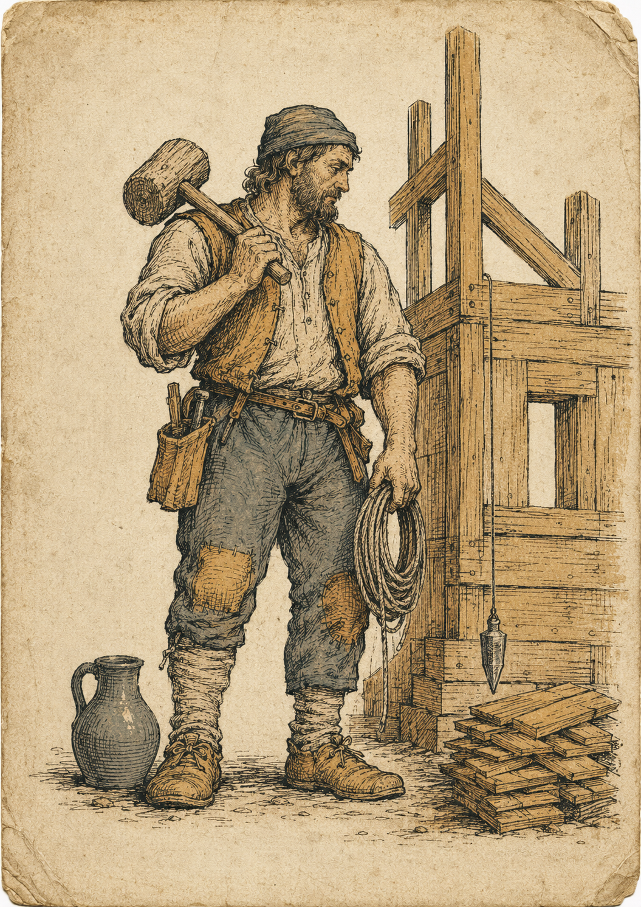 | 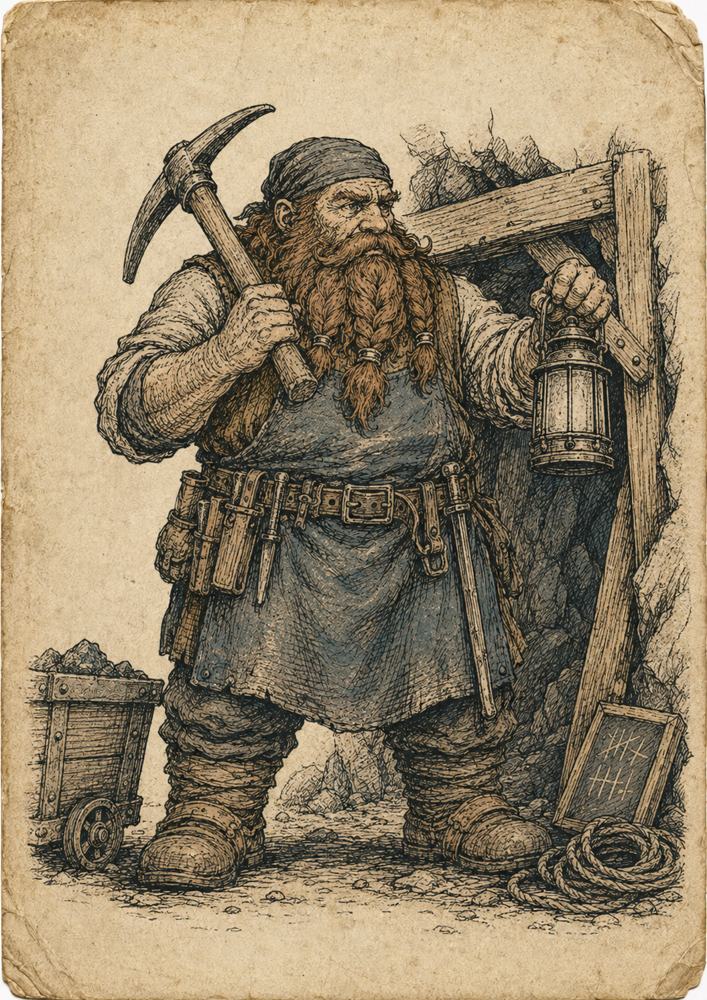 | 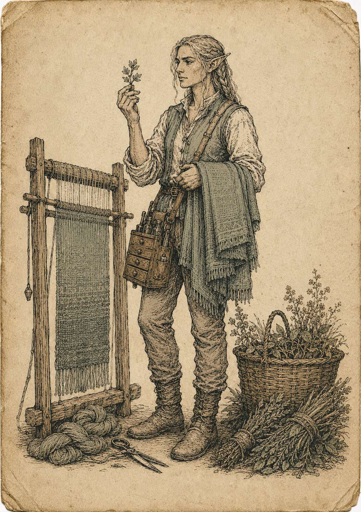 | 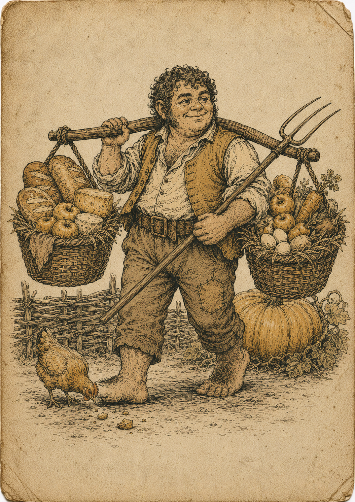 |
| Humans — the builder | Dwarves — the miner | Elves — the weaver-forager | Halflings — the farmer |
Healers. A new profession alongside the smiths and brewers: trained at the infirmary, unlocked recipe Tend the Sick, and the difference between an illness card being a story and being a body count. Physician, medic, witch doctor, bone-setter — the title varies by people; the profession is the same, and the character deck carries named examples of two of them.
Magic
Deliberately small and economic rather than a second system bolted on.
Mana crystals come from mana veins — six per vein, difficulty 6 to survey, two tokens on the whole board. They are the scarcest thing in the game.
Arcane herbs are foraged, which means a player with nothing but hands and a forest has a route into the arcane economy. The ingredient list has grown three entries — moon blossom (picked only at night), ember root (dug from dry ground) and frost lichen (scraped off cold stone) — each with a potion that wants it.
Potions are brewed at an alchemist with an alembic, and they are one-shot effects on the things the game actually cares about — hours, movement, safety:
| Potion | Effect |
|---|---|
| Draught of Vigour | One worker's die up two sizes for a round |
| Tireless Toil | Re-roll a worker's effort, keep the better |
| Brewmaster's Round | +1 effort to every worker in a town |
| Healing Draught | Cancel a worker loss, ignore a Plague card, or heal a character 3 |
| Swiftfoot | Double a figure's movement, or re-move a cargo |
| Stonehide | One unit ignores all hits in a battle |
| Prospector's Clarity | Auto-succeed a survey, reveal adjacent deposits |
| Merchant's Fortune | Shift a price band two steps for one sale |
| Owl's Eye | Travel tonight as if carrying a lantern |
| Physic Tonic | Cure one illness, anywhere |
| Emberguard Salve | Ignore every hit from a fire monster, one battle |
Every one of them buys hours, movement, safety or information. None of them break the economy, and all of them are made of things the economy produces.
The four elements
Every monster, every spell, every enchantment and every arcane fitting belongs to one of four elements, and each one has a mark. The mark is data — one drawn path per element in data/arcana.json — so a card, a chit, this page and the explorer all say fire with the same four strokes, and changing the mark changes all of them at once.
| Mark | Element | Ink | At home |
|---|---|---|---|
| Fire | oxide | Heat, forge-work, hunger. The desert and under the mountains. | |
| Earth | verdigris | Stone, root, patience. Hills, barrows and old woods. | |
| Water | slate | Current, mist, depth. Marsh, shore and open sea. | |
| Air | soot | Wind, cold, distance. The tundra and the high passes. |
They are built on one construction, so they read as a set: a ground line, and what the element does to it. Fire stands three tongues on it, earth puts a stone on it and takes the ground down in strata, water replaces it with three swells, air lifts three streamers clear of it altogether. None of them is a borrowed alchemical triangle — 04-iconography.md bans real-world symbols along with letterforms, and the triangles are the most borrowed symbols there are.
Mana and talismans. Slaying a monster yields mana of its element — and mana must be held. Elves carry up to 3 in the body; everyone else carries none, and stores it in a talisman: six cards from a 2-capacity bone charm to a 10-capacity crystal phylactery, each an item that is made, sold and stolen like any other. Mana is spent on spells — fourteen now, listed in the annex — one cast per character per round. The whole system is defined in data/arcana.json and reasoned through in 13-adventure.md.
Conflict
Combat. Each side rolls a die per unit and hits on 4+. Weapons add dice; armour cancels hits. Both sides apply hits at once, so attacking is never free. One round per battle, with retreat allowed — the intent is a sharp exchange, not a wargame inside a economy game.
Strength and defence. The 4+ is not fixed: shift it by less your own strength, plus their defence. Strength 3 against defence 3 hits on 4+, strength 5 against defence 3 on 2+, strength 2 against defence 5 on 6+, and it never goes better than 2+ or worse than 6+. Every figure in the game carries both — characters, monsters and the hirelings on the inn's board — and they are printed in the card's summary strip and set on the player board's S and D tracks.
Strength used to sit on both sides of that roll, which quietly made every strong thing armoured for no better reason than that it hit hard. Splitting it lets a stone boar barely swing and still turn a sword, a rime harpy be neither and be very easy to kill, and Vhalrik be both, which is what the clamp is for. Defence is not armour: armour cancels hits after they land, defence stops them landing, and a figure in plate has both.
Strength keeps its older job unchanged — the threshold some rules read off a monster card, where a thug refuses anything of strength 4 or more — and it picked up a new one, since it is also what a figure can carry (strength × 3 kilograms). One arm, one number.
It is a difference, not a score, and it never adds dice. That keeps a battle one round long however strong the people in it are, leaves +1 combat die meaning exactly what it always meant, and lets one number on the board serve your whole side of the fight — because the other side's is already printed on the card in front of you.
Equipment. A sword is +1 die. Steel doubles that and hits on 3+. A bow rolls before the enemy does but needs arrows. A war hammer ignores armour entirely. Plate harness absorbs three hits and costs you a move point.
Every weapon runs through the same production chains as everything else: a steel sword is two steel and a leather, which is a mine, a smelter, a steelworks, a pasture and a tannery. Arming yourself properly means having built an economy first, which is the point.
Raiding. Players may attack each other's towns and cargo. The winner loots 25% of the loser's stockpile (40% for orcs). Palisades give defenders an extra die; garrisoned soldiers defend automatically; a watchtower cancels one raid per game.
Why war is expensive. Soldiers produce nothing and eat every round. A player who builds an army has spent hours, food and housing on something that does not compound. That should make war a considered choice against a specific rival at a specific moment, and make the player who wars constantly lose on points to the one who farmed.
The event deck also brings unaligned enemies — raiders, wolves, a dragon — so a player with no soldiers at all is taking a real risk rather than a safe one.
Monsters. The discovery tables bring twelve more, three per element, and meeting one is a decision, not just a fight: slay it for its mana, or — where the card allows — enslave it, befriend it with the gift it names, or domesticate it into the strangest livestock you own. Not everything can be tamed, and the ones that cannot are the ones the campaigns are built around. The deck and the option rules live in data/monsters.json; the reasoning is in 13-adventure.md.
Hired muscle. Between a soldier's standing cost and a war's, there is the inn: thugs, militiamen and hired blades escort one journey for a flat fee and eat nothing. They fight at the strength and defence printed on the inn's board, and what you are paying for is which of the two you get — the thug is strong and careless (4/2), the militiaman is neither and is wearing a coat of plates (3/4), the blade is better at both (5/4). Costs in rules.json → hirelings.
08 — What is in the box
A first pass at the physical bill of materials, generated from the data. Quantities are for a 4-player game and are estimates, not a manufacturing spec.
Board
The 61 terrain tiles are shelved — #18. They stay in the bill of materials because they are still the right answer for a tile set; the board currently being built is one printed map plate — see the Maps section of the root README. Deposit and tree tokens are unaffected: they sit on a hex whether that hex is printed on a tile or on a map. The building tiles below are a separate line and are not shelved: they go on whichever board the table has.
- 61 hex tiles — double-sided, terrain printed on the face, a neutral "unexplored" pattern on the back. Terrain mix in
data/terrain.jsonunderboardSetup.terrainMix. - 45 deposit tokens — placed face down under tiles at setup, flipped when surveyed. Counts per type in
data/deposits.json(tokensInSetup). - ~40 tree tokens — forest tiles carry 6 each; removed as they are felled.
Building tiles
Placed on the board, or on a mini-map sheet opened out from one of its hexes. One cell of a tile is exactly one world-map hex, so a piece cut for one board seats on the other without being trimmed. Generated by tools/build-tiles.mjs into ../tiles/; how big each one is comes out of data/buildingtiles.json and is never typed on a building.
- 54 tiles, double-sided, 108 drawn plates — 49 buildings and 5 sown fields, each drawn twice. Face is the building finished; back is the same ground with the work not yet done, and the tile is laid that way up while the work is being paid for. Both sides carry the tile's own name — the picture is what tells the two apart.
- 21 one-cell, 21 two-cell, 10 three-cell, 2 four-cell — 16.7 × 19.3 mm up to 41.8 × 33.8 mm at the current print preset. A hut is one cell; a manor and a pasture are four.
- How many of each is a supply question, not a deck: three or four of the cheap tier-1 tiles per player, one or two of anything above tier 2, one of anything unique.
- Road, rail and bridge are not tiles. They are laid along a route rather than placed on a cell, and they are already a piece — the route bars in
components.json tokens.route.
Per player (×4)
- 1 player board — A4 landscape, and every one identical. A recess for the card in play, four more for whatever that card has in play, five numbered tracks up the middle and the round's phases underneath. Print more than there are players: one spare as the encounter board, and one for every vehicle on the road. Generated by
tools/build-board.mjsintodocs/boards/; the anatomy is below, under The player board - 20 building markers in the player colour
- 12 worker meeples, 4 specialist meeples (distinct shape), 6 soldier meeples
- 4 figures — prospector, merchant, hero, and a spare
- 6 tool cards with sliding durability markers — the fiddliest component, and the one most worth prototyping early
- 30 road segments, 20 rail segments, 4 bridges
- 6 effort dice — d6 standard, plus a d4/d8/d10/d12 set shared between players for ladder effects
Cards
- 69 event cards — the deck in
data/events.json - 66 commodity reference cards — one per commodity, showing value, bulk, and what makes it. These double as the market price reference.
- 87 recipe cards — or, more likely, 8 double-sided player reference sheets grouped by category. 87 cards is a lot of shuffling for something nobody shuffles.
- 37 item cards — clothing, armour, weapons, potions, lights and talismans
- 12 monster cards, 12 vehicle cards, 8 character cards, 8 quest cards — the adventure decks, in
data/monsters.json,vehicles.json,characters.jsonandquests.json, all built to grow
Card codes. Every card carries a deck prefix and a two-digit sequence — VEH-03, MON-09, QST-07 — with a v2 suffix if a card is ever reprinted changed. The scheme is data (vehicles.json → cardIdScheme), the numbering is this repository's own, and a fork is free to renumber.
The summary strip. Every number a card has is printed once, as a maximum, in a row of lettered boxes across the top of the card: H 10 S 3 D 3 M 0 ¤ 45 KG 9. Six boxes is what a 63 mm card holds at a legible size, and the letters are the player board's own track letters, so setting up is reading across the strip and putting tokens down left to right. Nothing on a card moves. Everything that moves is on the board.
There used to be a bar convention — a vertical numbered ladder up each edge, harm left and capacity right, walked by a token. It was right for a card held in the hand and it stopped being right the day the player board arrived, because a card in a recess is a card whose edges are under the board. The tracks moved; the ladders became decoration that ate two columns of picture; and a character with two capacities needed a third bar laid over their own face. Taking them off gave the portrait the full width of the card and gave every deck one geometry instead of four.
Where the element used to be a badge beside the name, pushing everything else a line down the card, it is now the last box of the strip: the same ring and mark, in a box the size of the numbers beside it.
The player board
One A4 landscape sheet a player keeps in front of them. It does three jobs, and the third is the one that earned it:
- A place for the hero. A recess the character card drops into, and four more for whatever else is in play — a weapon, a lantern, a talisman, the vehicle being run, an accepted quest. Four, not five: a hero who wants a fifth thing has to put something down, which is the same argument the strength limit is making.
- The turn reference, printed from
rules.jsonso it cannot fall out of step with the rules the way a hand-lettered one would. - Six numbered tracks, and this is the point. Everything that moves in front of one player moves here, in one place, where it can be reached and knocked back to zero.
| Track | A rung is | Runs | Walked by | |
|---|---|---|---|---|
| H | Health | 1 | 0–14 | The figure, hurt and mended — and only medical aid mends it |
| S | Strength | 1 | 0–14 | Set from the card; a rung down for every night without a camp, all of it back after one night's sleep |
| D | Defence | 1 | 0–14 | Set from the card. Your opponent reads it, not you |
| P | Pace | 1 hex | 0–14 | Hexes left in this leg |
| M | Mana | 1 | 0–14 | The body and every talisman in a slot |
Pace is the board's own: a party counts hexes off a speed table every single round of the game and has never had anywhere to count them — set the token at the start of a leg, walk it down a rung a hex, halve it for a night leg under a lantern. At zero the leg is over and the discovery roll is where you stopped. It is called pace rather than speed because strength has the S.
There is no V. There was: a sixth column called Vehicle, counting damage on the wagon the player was running — printed on every board in the game whether anybody was running one or not, and the only number on the board that walked up. A vehicle is a figure now. It is dealt a player board of its own and run like a player who is not a person: its card in the recess, its cargo and its modifications in the four kit slots, and its hull on the health track, set from the card, down as it is damaged, up as it is repaired, wrecked at nothing. A hull is a body. The five columns left over got the width back.
Strength swallowed burden. They were the same arm doing the same job under two numbers: what you swing with and what you can shoulder. One track now, and what a figure carries is strength × 3 kilograms — printed on the card so nobody multiplies at the table, derived so it can never disagree with the strength beside it.
Defence is new, and it is the half of the old strength that had no business being there. Strength used to sit on both sides of the attack roll — yours and theirs — which quietly made every strong thing armoured. A stone boar barely swings and turns a sword; an ash drake does both; a dust devil does neither and is still almost impossible to hit. Two numbers, two properties. See A fight, below.
The tracks are numbered and nothing else. No rung glyph, no plus, no minus. Each rung used to carry a little ink-plate mark saying which kind of number it was, and at a shade over 11 mm a column it was competing with the figure for the same three millimetres. Which way a token walks is a sentence in the rulebook, where there is room to say it.
Every track runs 0 to 14, and that is the game's ceiling as well as the board's. The zero rung matters: it is where a token starts and where it ends up, and a numbered rung says so without a separate seat ring under the ladder. The top rung is a promise the whole dataset has to keep — data/playerboard.json lists every number a token walks and tools/validate-data.mjs sweeps the lot, so a fifteenth point of health fails the build rather than walking off the top of a board somebody has already printed.
Kilograms are the one thing that never has to fit that ceiling, because nothing walks a token for them any more: a load is totalled and checked against the limit printed on the card, and a strength-6 caravan guard shouldering 18 kg is a sentence, not a ladder.
The tracks are the only thing on the board carrying colour: harm in oxide, a rating in ochre and slate, the leg in verdigris, mana in bruise. Mana is the only arcane subject on the sheet and the only thing that takes the slip.
One board, and every one identical — and print one more than there are players. Everything that differs between an orc and a halfling is printed on the card lying in the recess, so the board underneath has no business knowing which of them is sitting there. The spare board is the encounter board: when a discovery roll turns up a monster or a stranger, their card is dealt onto it, its tracks are set from the card's summary strip, and for the length of the encounter it is a player who is not a person. Being generic is what makes that work.
There is no border. A card has a frame because a card is held, fanned and cut out; a board is not. The 18 mm of paper the border used to take was doing nothing but making the middle narrower, and taking it off is what paid for a sixth track — the columns came out wider with six than they had been with five. Retiring that track, when a vehicle started being dealt a board of its own, handed the width straight back: five columns, over 13 mm each, and not one coordinate typed to do it.
A fight
Strength was already in the game, on every monster card, doing one job: a threat rating that some rules read as a threshold — a thug refuses a monster of strength 4 or more. It now does the other half of the job as well, and defence is the half it used to do badly. It is a shift on the number you need rather than a pile of extra dice:
Roll as before, one die per unit. Then shift the number you need: less your own strength, plus their defence. Strength 3 against defence 3 hits on 4+, exactly as it always did. Strength 5 against defence 3 hits on 2+; strength 2 against defence 5, on 6+. Never better than 2+ and never worse than 6+.
Four things fall out of that. Dice count stays where it was, so a strong figure is not a faster figure and a battle does not get longer because somebody is strong. Weapons and armour keep their job untouched — +1 combat die is still +1 combat die, and armour still soaks hits after they land, which is a different thing from defence stopping them landing. One number on the board serves your whole side of the roll, because the other side's is printed on the card in front of you. And hitting hard and being hard to hurt have finally come apart: a stone boar barely swings and turns a sword, a rime harpy is neither and is very easy to kill, and Vhalrik is both and is the reason for the clamp.
The clamp is doing real work at the top of the range. Vhalrik is strength 7 and defence 6; Ruk, the strongest character printed, is 6 and 5. Without a floor and a ceiling on the target number a dragon would be arithmetic rather than a fight. With them, the halfling still lands one in six.
An encounter
A discovery roll that turns up a living thing has always produced a monster and never said how to run one. It does now, and the answer is the furniture already on the table: deal its card onto the spare player board. Set that board's tracks from the card's summary strip — health, strength, defence, mana — and it has everything a player has and is run the same way, by whoever sits left of the player who drew it. When the encounter ends the card is put away, the tokens come off, and nothing is written down. A stranger met on the road is set up exactly like a hero, because that is exactly what they are to themselves.
The market board
One A4 landscape sheet of market lines, and every line identical. A line is three strips read left to right:
| TALLY | MEMORY | PRICE | ||
|---|---|---|---|---|
0 1 2 3 4 | −3 −2 −1 0 +1 +2 +3 | ×0.5 ×0.75 ×1 ×1.25 ×1.5 ×2 | ||
| what the board is holding | added to the swing | base value × this | ||
| a bar walks it | a bar walks it | the commodity's own hexagon walks it |
Where the hexagon stands is the price; which hexagon it is says what the price is of; and the mark engraved in its corner says which of the three market-memory models the two strips are running under. The token is the label, the reading and the rulebook — see 04-trade.md.
The foot is the working half of the sheet. The five dice — two red, two blue, one green — the elasticity strip that reads the green one, the seven-cell swing ruler that turns a roll into a number of bands, and the key to the three model marks. Everything a Market phase needs is on one piece of paper, and none of it is a lookup.
Six lines to a sheet, and nothing on it names a commodity, a town or a player. That is the design, not an omission: a line is not the grain line until somebody puts the grain token on it, and a name strip down the side would need a second token or a pencil to say what the token already says. One board serves any commodity, any town and any table, print more of the same sheet for more towns, and a game that adds a sixty-seventh commodity reprints nothing.
Every strip has a heavier-ruled home cell with the shape of its own piece drawn in hairline — a disc on the tally's empty and the memory's zero, a hexagon in the ×1 band — so setup is a shape-matching job and a reset board is three straight columns. tools/build-market.mjs generates it from data/marketboard.json, the bands in rules.json and the system in data/pricing.json; the geometry is components.json marketBoard, and there is not a coordinate in any of it: the strips take a bar's width each, the ladder takes what is left, and the sheet holds however many lines fit between the head and the foot. Widen the memory track and the board loses ladder; widen it far enough and the build fails rather than printing a band cell a hexagon overhangs.
Tokens and bits
- Commodity tokens — the big question. 63 commodities is far too many to give each its own wooden bit. Two candidate approaches: 1. Generic cubes in 11 category colours, with the specific commodity tracked on a player-board grid. Cheap, compact, and it makes a stockpile hard to read at a glance from across the table. 2. Printed cardboard chits per commodity, ~20 of the common ones and ~8 of the rare. Readable, thematic, and a genuinely large amount of punchboard.
The digital prototype sidesteps this entirely, which is exactly why it should not be the thing that decides it. This needs a paper prototype before it needs an opinion.
One thing the style guide settles either way: eleven distinguishable colours do not exist — not across colour-blindness, not across dye lots, and not in greyscale, where the eleven collapse into five clusters. So each category also carries a hatch pattern, which is what actually identifies it. Under option 1 the hatch moves to the player-board grid cell, and the cube supplies only colour — which is a real argument in favour of cubes, since it costs nothing to print a hatch into a cell. See ../art/02-palette.md.
Cut pieces are hexagons; struck pieces are discs. A hexagon shares its cuts: nested on a laser bed, one straight line is the edge of two tokens, so a sheet of hexes yields around a fifth more pieces than the same sheet of discs and the head travels a good deal less. Commodity tokens are the ones there are hundreds of, so commodity tokens are 18 mm flat-top hexagons, and deposits are the same shape at 24 mm — size is what tells them apart, since both live on the table.
Whichever way it goes, a commodity token carries two marks: its family's, and its market-memory model's, engraved small in the corner (data/pricing.json, drawn by tools/build-icons.mjs). The second one is there because the market board cannot carry it — a board line is not about anything until a token is standing on it, so the rule that line runs under has to arrive with the token. Pick up grain and you are holding a glut good; pick up iron ore and you are holding a hole in the ground.
- Coins — round, because a coin that is not round is not a coin. There are far fewer of them, they are the one piece a hand finds by feel while the eyes are elsewhere, and round against hexagonal is the fastest distinction a hand can make in a heap. Three sizes — 16 / 19 / 22 mm for 1 / 5 / 25 — so a stack is countable by feel and in greyscale.
- Bar tokens — one small 7 mm disc per track in play: six per player board, and two per commodity line on a market board — one on the tally and one on the memory. None on any card, because no card has a track.
- Route tokens — road and rail, laid on the map hex by hex, and the piece that puts a player's name on what they paid for. A bar the length of the line between two hex centres: at the default four-sheet Korvane Reach board that is 15 × 3.7 mm for road and 15 × 5.3 mm for rail, and
tools/build-map.mjsprints the figures for every print preset, because the size is the map's business and not the token's. Ownership is peg holes down the centre line — one for the first player, two for the second — as well as colour, so the toll (see economy) is never an argument. - Round marker, turn order markers, first player token
Mini-maps
One A4 landscape sheet per terrain: a hexagon of 61 hexagonal cells — the inside of a single campaign-map cell — with an encounter panel and a holdings panel in the space a hexagon on a rectangle leaves over.
A mini-map is a colour, a pattern and a grid. No render and no plate. The field is the colour that terrain already prints in (palette.json terrain[].wash), patterned with that terrain's own map mark — a grass tuft, a conifer, two hummocks, a peak, reeds, a frost star, a dune, a river between its banks — with the grid ruled on top, and that is the whole sheet. It still needs no artist and no place in the mint queue.
The sheet was a flat colour and nothing else, on the argument that drawn ground competes with the pieces standing on it, and every one of these sheets is a sheet somebody is standing pieces on. Half right: a drawn sheet competes. A mark at a third of a cell, on the ink plate at a third of full strength — quieter than the grid ruled over it — does not, and it does what the colour could not do alone: say which ground this is from across the table, and say it in the black-and-white edition too. The marks are the world map's own, carried as data on the terrain (terrain.json terrains[].mark) exactly as an element carries its mark, and drawn per components.json marks.terrain.
A cell is a world hex — exactly. 16.7 mm at the default four-sheet print preset, read off the map rather than chosen, so a figure based for the campaign board stands in a mini-map cell without being re-based, a route token cut for one fits the other, and one ruler measures both. Print the map bigger and the sheets follow. The scale is a fiction — the ground inside one hex is not sixty-one hexes of ground — and it is the right fiction, because everything physical about the two boards agrees.
tools/build-minimaps.mjs generates them into docs/minimaps/sheets/; the spec is docs/minimaps/README.md and data/minimap.json. The thirty-two hand-drawn sheets that preceded this — Holdings, Grounds and Places, part of the shelved tile board (#18) — stay committed at docs/minimaps/img/ and are not touched.
Player aids
- Turn reference — the six phases, and the legality checklist for allocating effort
- Travel & discovery reference — the speed table and the d20 tables, straight from the annex
- Production chain poster — the tier-0-to-tier-4 spine on one sheet. The Chains view in the web explorer is the working draft of this.
Print-and-play
Everything above is derivable from data/*.json, so a generator that renders card fronts from the data is an obvious next tool — and it would keep the printed components honest against the rules automatically, in the same way the web explorer already is. Two slices of it exist. tools/build-cards.mjs renders the adventure decks — characters, vehicles, monsters and talismans — into docs/cards/ from the data and the accepted plates in docs/art/renders/, one card per accepted render, print page included. tools/build-board.mjs renders the player board into docs/boards/, tools/build-market.mjs the market board into docs/markets/, and tools/build-minimaps.mjs the mini-map sheets into docs/minimaps/ — all at true A4 landscape.
None of them holds a coordinate it did not work out. The player board's track columns are whatever width is left once the card recesses have had theirs, which is why adding a sixth track narrows the columns instead of running off the paper. A market board's band cells are what the tally and the memory strips leave, and each strip cell is a bar token wide, so widening the memory track narrows the ladder rather than running off the paper; a line is exactly one commodity token tall, so a bigger token makes a taller line and fewer of them rather than a token that overhangs its cell. A mini-map cell is a world hex, so the field sizes itself and a field that would not fit the paper fails the build.
The two-plate system is what makes that generator tractable: one layout pass emits a #wash group and an #ink group, the colour edition is both, and the print-and-play edition is the ink group alone. Not two design efforts — one layout and two print runs. The files in ../art/examples/ are built to that contract and are the generator's target output.
09 — The digital build
What exists
docs/index.html is a single page with no build step, no dependencies and no network requests. Open it from disk and it works.
Two things live in it:
The explorer — browsable views of every dataset, cross-linked. Click a commodity to see everything that makes it, everything that consumes it, everything it builds. The Chains view draws the full production tree for anything and reports the effort hours per unit all the way to the ground.
The sandbox — a playable single-town, single-player slice using the real rules. Roll effort, allocate it, found buildings, forge tools, trade, feed everyone, take the consequences.
What the explorer does not render yet: the adventure decks — monsters, vehicles, characters, quests, spells, the travel and discovery tables. Their data ships in the bundle (anything in manifest.json does), so the explorer's views are the gap, not the pipeline. The sandbox likewise plays the single-town economy only; nothing digital moves a party across the board yet.
Architecture
data/*.json the single source of truth
↓ tools/build-data.mjs
docs/data/bundle.js generated: window.GAME_DATA
↓
docs/js/data.js indexes and graph queries — no rules
docs/js/engine.js the rules — no DOM
docs/js/views.js the explorer
docs/js/sandbox.js the sandbox UI
docs/js/app.js tabs, search, drawerThe important line is between engine.js and everything above it. The engine takes a state object and returns a state object; it does not know what a button is. That is what lets tools/simulate.mjs load the same engine in Node and play thousands of rounds headlessly, and it is what a future multiplayer board layer would build on.
Why a generated bundle instead of fetch
Browsers refuse to fetch() a local file, and <script type="module"> has the same problem over file://. A generated bundle.js loaded by a plain <script> tag is the only way to keep data/*.json as the single source of truth and keep the page openable by double-clicking it with no server and no install. Run node tools/build-data.mjs after editing any data file.
What the sandbox implements faithfully
Effort dice and the modifier ladder · tool durability and breakage · recipe inputs, outputs and variants · fuel bundles with output penalties · maturation waits · crop sowing, growth and harvest · construction with build-points and a minimum-rounds floor · storage caps and overflow · feeding, unrest and the variety bonus · market price bands and the spread · specialist training · the event deck.
What it simplifies, and where the table rule differs
Each of these is marked SIMPLIFIED in engine.js.
Spoilage. The tabletop rule ages each batch and loses it after perishRounds. The sandbox has nowhere to track batch ages, so what is left after the meal loses a quarter of its stack per round unless a granary shelters it. Feeding happens before spoilage — you eat the fresh food first.
Peoples' traits. Several are written as die-size changes for workers at a particular site ("dwarves roll d8 in a mine"). The sandbox rolls one pool of hours for the whole town, so there is no per-site die to step; those traits are approximated as output multipliers. This is a genuine design tension, not just an implementation gap — see 10-open-questions.md.
One town, no board. There is no map, no movement, no transport, no other players. Terrain and deposits are a fixed list the town simply has. Everything in 03-map-and-movement.md and 04-trade.md is designed but not implemented.
Events. Effort modifiers, crop advances/pauses and price shifts resolve automatically. Anything targeted, local, or offering a choice is logged for the player to resolve, because a single-town prototype has no "one region" to apply.
Worker slots are defined on every building but not yet enforced in the sandbox — the effort pool is town-wide rather than per-site.
The simulator
node tools/simulate.mjs # one game, printed round by round
node tools/simulate.mjs --people dwarf --seed 7
node tools/simulate.mjs --games 20 # aggregate across seedsIt plays with a simple policy: sow before eating the seed, feed the town, replace broken tools, sell the surplus, build the next thing on a wish list, then whatever pays best per hour. It is a balance instrument, not a test — if it reports that a competent opening starves in round 4, the numbers are wrong, not the bot.
It has already earned its keep: see 12-what-simulation-found.md.
Where this goes next
The natural order, in rising cost:
- Enforce worker slots — needs allocation per site rather than a town pool.
- The board — hex grid, tiles, figures, fog. The largest single piece.
- Multiple towns — stockpiles per town, and food that has to be where the people are, which is what makes transport matter.
- Transport and routes — cargo tokens moving over rounds.
- Multiplayer — hot-seat first. The engine is already shaped for it: state in, state out, no hidden globals.
- A card generator — render printable components from the same data, so the physical game cannot drift from the digital one.
10 — Open questions
Things that are genuinely undecided, roughly in order of how much they would change the game. Where a decision has been provisionally made, the provisional answer is marked [working answer] — it is in the data, and it is not settled.
Structural
1. Is effort a town-wide pool or a per-worker assignment?
The brief says each worker rolls a die and the player allocates that effort. The prototype pools all the hours, which is much easier to play — but it makes several designed traits inexpressible. "Dwarves roll d8 in a mine" needs to know which worker is in the mine, and a pool does not.
The trade-off:
- Pool — fast, flexible, hides the workers. Bonuses have to become flat output multipliers, which is a real loss of texture.
- Per-worker — each die stays with a meeple you place at a site. Slower, fiddlier, and it makes worker slots, terrain penalties and racial traits all work properly.
[working answer] Pool in the prototype, per-worker on the table. That split is not sustainable — the two versions would diverge — and it needs resolving before the board layer is built. My inclination is per-worker with dice physically placed on buildings, because placing a die on a mine is a better game than subtracting 3 from a number.
2. How are commodity tokens handled physically?
63 commodities is far too many for one bit each. Generic coloured cubes plus a player board grid, or printed chits per commodity? See 08-components.md. This needs a paper prototype, not an argument.
Half-answered. The shape is settled and the count is not. Commodity tokens are 18 mm flat-top hexagons, because hexagons nest on a laser bed with shared cuts — a sheet of them yields around a fifth more pieces than the same sheet of discs, and the head travels a good deal less. Coins stay round, because a coin that is not round is not a coin and because round-against-hexagonal is the fastest distinction a hand can make in a heap. Whether there are sixty-three kinds of hexagon or eleven is still the open half.
3. Is 24 rounds right?
The simulator gets one town to ten buildings in 24 rounds. Tier-3 chains are reachable but rarely worth it. Either the game is longer, buildings are cheaper, or the deep chains need to pay much better. Unresolved and important.
Economy
4. Should storage be per-town or per-building?
Currently a town has one pool of slots and warehouses add to it. The alternative — goods live in a specific warehouse — makes theft cards much more interesting (which warehouse?) and bookkeeping much worse.
5. Does anything stop a player hoarding one commodity? — half answered
Nothing stops the hoarding. What is answered is the other half of it: selling the hoard is now self-punishing. Every commodity runs a market-memory model, and for the 45 that price by glut, every five tokens sold into a town's board steps that line's memory down a cell — to a floor of −3, which is a market that will not come back up until somebody buys the stock out again. A player sitting on 40 grain can no longer sell 40 grain. See 04-trade.md.
Still open: rising storage cost for holding it, and whether the variety bonus's single effort point is doing anything at all. Hoarding may still be a fine strategy — it is just no longer a fine strategy to liquidate in one round.
6. Are the spread numbers right?
15% each way, removed by a trading house or a merchant. That is a 30% round trip, which makes player-to-player trade obviously better than the board. Probably correct — the board should be the fallback, not the plan — but the gap may be too wide to leave any reason to build a market at all beyond the safety net.
Map and movement
7. Hex or square tiles?
Hexes are in the data (terrain.tileShape), squares are listed as an alternative. Hexes are better for movement and worse for rail networks, which want to branch orthogonally.
Parked behind #18. The question only bites for a board made of tiles, and that is shelved; a drawn map plate is hexed by an overlay, and the overlay's shape is a one-field change in the board file. It comes back with the tile set.
8. How does a player found a second town?
Not designed. A town hall is "one per town", but nothing says what a town is, how far apart they must be, or what it costs to start one. This is a significant gap: the whole transport and food-distribution design assumes multiple towns exist.
9. Who owns a revealed deposit?
Currently: whoever builds the mine, not whoever surveyed it. That makes prospecting risky in a way I like, but it may be too punishing — you can hand a rival a coal seam by finding it. Options: a short claim window, or a claim marker the surveyor may place.
People
10. Can workers be moved between towns?
The brief says yes, and it is not designed. If workers move freely, feeding pressure becomes trivially solvable by walking people to the food. If they cannot, a town whose farm fails is dead. Probably: workers move slowly and one at a time.
11. Should specialists be losable?
Currently a specialist is permanent once trained. Plague removes workers — should it be able to take your only smith? Dramatic, and possibly infuriating.
Conflict
12. Is one round of combat enough?
One exchange, hits on 4+, both sides simultaneous. It is fast and it keeps war from swallowing the game, but it may make outcomes too swingy to justify the investment in soldiers.
13. What stops a player from being eliminated early?
Nothing yet. Losing all your workers is possible and there is no floor under it. A player knocked out at round 8 has a bad evening. Needs either a hard floor (you always keep one worker and one hut) or a comeback mechanism.
The adventure layer
18. Does per-player event drawing scale?
Each player now turns a card in the Events phase, so a five-player round is five or six events. That is a lot of weather. It makes every player own a piece of the round and it feeds the discovery-band cards nicely — but if a round drowns in card resolution, the fallback is one shared card plus one per player cap of three, and the data already carries copies to support either.
19. How does character death actually play?
[working answer] A character at 0 health is carried to the nearest settlement, rests to half, loses carried cargo. No permadeath — a player's hero card is theirs for the game. The open part: whether losing a campaign stage to a wipe should discard the campaign for everyone (currently: only if abandoned).
20. Is mana too slow to matter?
Twelve monsters yielding 1–4 mana each, spells costing 1–5, and monsters must be found. If a whole game yields a player 6 mana, spells need to be strong; if the Blood Moon floods the map, they need to be weak. The dial is manaYield on the monster cards, and it needs plays, not opinions.
21. Do enslaved monsters break the labour economy?
A Barrow Troll is a d8 worker for 3 food and 1 unrest. Compare a real worker: d6 for 1 food. Probably fine — the troll had to be beaten by 2+ hits without killing it first — but the exchange rate is untested.
Digital
14. How much of the board game should the digital version enforce?
A strict digital version cannot express the negotiation, table talk and improvised deals that make the board version good. A loose one is a spreadsheet. The current sandbox resolves what it can and logs the rest for the player — that split feels right for a companion tool and wrong for a standalone game.
15. Is the web version a companion or a replacement?
Unresolved, and it changes everything about what gets built next. A companion needs the reference views and a turn tracker. A replacement needs the board, multiplayer and an AI. The current build hedges by being neither, which is fine for now and will not be fine for long.
Presentation
16. Is halfling the right name?
Four of the five peoples are named with folklore terms in the public domain and used across hundreds of unrelated works. halfling is the exception worth a decision: the word appears in Tolkien and has been treated protectively by that estate, though it is also long-established as generic in tabletop games.
The risk is low, and it is a naming question rather than a visual one — but it is cheap to change now and expensive to change after a print run, so it should be decided rather than assumed. Generic alternatives that lose nothing: smallfolk, burrowfolk, hearthfolk.
Changing it touches data/peoples.json and every doc that names them. Nothing in ../art/ depends on the word — the art risk is the rendition, not the name, and that is handled in ../art/08-influences-and-distance.md.
17. Do commodity chits get individual art, or does the frame system carry it?
The style guide gives every commodity a category frame, a category hatch and a drawing. The drawing is by far the most expensive part — 63 of them — and the frame plus hatch already identifies the category unaided. Whether an 18mm chit needs its own illustration, or whether a well-chosen frame and a numeral is enough, is a real question about where the art budget goes. It should be answered with a printed test sheet, not an opinion.
11 — Why the opening cannot deadlock
This is a short doc about one rule, because that rule was arrived at the hard way and it is the kind of thing that gets "tidied up" by someone who does not know why it is there.
The problem
An economy where every tool needs a building and every building needs a processed material will deadlock. The first version of this data did exactly that, in two places at once:
The stone loop. Stone came from a quarry. A quarry cost ironware. Ironware needed a blacksmith. A blacksmith cost stone. Nobody could ever build the first one of anything.
The lumber loop. Lumber came from a sawmill, which needed a saw, which was forged at a blacksmith, which cost lumber.
The plough gate. Sowing required a plough. A plough needed ironware, which needed a blacksmith, which needed a mine, a smelter and a pick. So a player could not plant a field until they had built an industrial base — while eating one food per worker per round from round one.
None of these were visible by reading the files. All three fell out of the first headless simulation, which reported a town that starved in round 2 and never built its fourth building.
The rule
Hand labour is always possible. Tools multiply it.
Concretely, three toolless or near-toolless jobs form the floor of the economy:
| Job | Site | Tool | Yield |
|---|---|---|---|
| Gather Deadwood | forest, grassland, hills, marsh | none | 1 log / 3h |
| Gather Field Stone | hills, mountain, river bank, tundra | shovel | 1 stone / 3h |
| Forage | most wilderness | none | ~1.2 food / 2h |
Against the tooled versions — 2 logs per 2h with an axe, 2 stone per 3h at a quarry — they are bad. That is the design: they are not a strategy, they are a floor.
And farm tools became optional multipliers rather than gates:
- Sowing takes 4 hours by hand, 2 with a plough.
- Harvesting yields 6 by hand, 12 with a scythe.
Mining kept its hard gate. You cannot break rock with your hands, and coal should stay behind a real investment.
The safety net
The floor guarantees a player can always gather something. The market turns that into a recovery:
- A Market costs 4 logs and nothing else — reachable by hand in two or three rounds from absolutely nothing.
- Tools can be bought there for coin.
So the worst case in the game — every tool broken, empty stockpile — is: gather deadwood by hand, put up a stall, buy an axe, carry on. Slow and humiliating, but never dead.
This is also why the market's cost was changed from 3 logs + 1 cloth. Cloth is four steps into the textile chain; requiring it made the safety net unreachable by exactly the player who needed it.
The starting position
A new town gets 2 logs, 8 grain, 1 water, 1 barrel, an axe and a shovel.
The grain is the load-bearing number. A town of 2–3 workers eats 2–3 per round, and the path to the first harvest is: build a farm (2 rounds), sow (1 round), wait 3 rounds, harvest. Eight grain bridges that gap with a little to spare. Start with four — as the first version did — and the opening is unwinnable no matter how well it is played.
The starting stock also sits deliberately under the storage cap. A town that begins in overflow bleeds goods before the player has made a single decision, which is a terrible first impression of a rule that is otherwise fine.
If you change these numbers
Run the simulator. It takes two seconds and it will tell you.
node tools/simulate.mjs --games 20If games with unrest climbs or buildings falls, something in the floor has been broken.
12 — What the simulator found
A record of design faults caught by tools/simulate.mjs before anyone played a game, kept because the kind of fault is more useful than the fix.
Faults found and fixed
1. Two circular dependencies made the economy unstartable
Stone needed a quarry, which needed ironware, which needed a blacksmith, which needed stone. Lumber needed a saw, which was forged at a blacksmith, which was built of lumber.
Neither was visible reading the JSON — each file looked reasonable on its own. The simulator found them in one run, as a town that never built its fourth building.
Fixed with a toolless floor and by removing ironware from the quarry cost. See 11-bootstrap.md.
The general lesson: referential integrity checking is not enough. Every id resolved correctly the whole time. What was broken was the graph, and only playing it found that.
2. Farming was gated behind heavy industry
Sowing required a plough; a plough required ironware, a blacksmith, a smelter, a mine and a pick. Meanwhile the town ate from round one. Fixed by making farm tools optional multipliers rather than gates.
3. The town started in storage overflow
Starting stock came to 24 bulk against a 12-slot cap, so the first Feeding phase destroyed half of it before the player had made a decision. Fixed by raising the free stockpile to 10 slots and trimming the starting goods to sit comfortably under the cap.
4. Losing your last axe was unrecoverable
No axe means no logs; no logs means no lumber, no blacksmith and no new axe. Fixed by adding toolless deadwood gathering and making the market cheap enough to be a genuine safety net — 4 logs, no cloth.
5. Sowing was misclassified as un-automatable
An engine bug rather than a data one: any recipe with no immediate outputs was flagged "resolve this at the table". Sowing has no immediate output — it puts a crop marker on a field — so the digital game could never plant anything. Found by tracing why the bot would not farm.
6. Halflings only had their penalty implemented
"Second Breakfast" doubled their food bill; "Many Hands" and "Green Fingers" were prose the engine never read. They starved in 12 games out of 12. Second Breakfast became a flat 2 food per town per round, which scales sanely, and their farming got a multiplier.
Current state
20 games per people, 24 rounds, one town, the standard bot policy:
| People | Score | Workers | Buildings | Coin | Games with unrest |
|---|---|---|---|---|---|
| Elves | 21.0 | 5.0 | 10.0 | 24 | 7/20 |
| Humans | 20.7 | 5.0 | 9.7 | 18 | 10/20 |
| Orcs | 18.6 | 5.0 | 7.6 | 22 | 3/20 |
| Dwarves | 18.2 | 5.0 | 7.4 | 36 | 19/20 |
| Halflings | −14.6 | 6.0 | 6.6 | 101 | 18/20 |
Reproduce with node tools/simulate.mjs --games 20 --people <id>.
Known problems these numbers show
Halflings are still the worst by a mile. They end with the most workers and the most coin and still score −15, because unrest costs 2 points each and they carry ~18 of it. Their flat food surcharge is still not paid for by anything the engine implements.
Dwarves hit unrest in 19 games out of 20. Their −50% farming penalty bites in a single-town sandbox with no one to buy food from. That may be correct — dwarves are supposed to be a trading people — but it cannot be confirmed until there is more than one town. Treat it as unproven rather than as a fault.
Human, elf and orc cluster at 18–21. Close enough to be encouraging, and far too crude a test to mean anything yet.
The overall pace is slow. Ten buildings and five workers in 24 rounds means the tier-3 chains — steel, glass, fine cloth — are reachable but rarely worth reaching. The levers are build-point costs, the length of the game, or the rate of housing. This is the biggest open balance question and it needs human playtesting, not more bot runs.
What the bot cannot tell you
It plays one town with no opponents, no board, no trade and no war. It cannot say anything about the parts of the game that are about other people — which is most of what makes a board game good. It is a check that the economy functions, not that the game is fun.
13 — The adventure layer
The game began as a settlement economy. It has grown an open world around it: travel with day and night, discovery rolls, monsters, mana, quests and named vehicles. The design intent is that the adventure layer hangs off the economy rather than floating beside it — every sword is still a production chain, every quest reward is still coin, goods or hours, and the fastest way across the map is still the railway somebody had to build.
The data lives in five files, one system each: travel.json, discovery.json, monsters.json, quests.json, arcana.json — with the decks in vehicles.json and characters.json and the talismans in items.json. Prose here, numbers there.
Days, nights and light
Every moving figure, party or vehicle gets one day leg per round, at the speed in travel.json for its mode and the terrain letter codes it crosses. The letter in the bottom corner of every hex is the ruling: G4 means a walker crosses four grassland hexes in a day.
After the day leg a party may push on into a night leg — but the dark in the Reach is genuinely dark:
| Light | Night speed |
|---|---|
| None | No travel. Even on a road. |
| Torch | 1 hex (2 on a road); spends one of the torch's uses |
| Lantern | Half day speed, rounded up; spends nothing |
| Owl's Eye potion | As a lantern, for one round |
A night leg is never free: it triggers a second discovery roll where the party stops, with the monster band widened by 1. Trains run at night at full speed with a lantern fitted; ships need one rigged and sail at half speed. Torches burn out; lanterns are capital. That is the whole economy of light, and it makes a lantern one of the best-value items in the game — which is why one is a quest delivery.
Caves appear through discovery rolls on hills and mountains (the caves terrain feature). A party may enter only with a lit torch or lantern; inside is one draw on the cave column — hazard, trace, monster, or hoard. An emptied cave becomes a known camp: resting there is free.
Discovery rolls
When a figure, party or vehicle ends a movement leg, it rolls a d20 on the discovery table for the hex it stopped in — one roll per leg, never one per hex crossed. A road or rail on the hex overrides its terrain table.
The tables (in discovery.json, printed in the annex) are skewed on purpose:
- Roads grow merchants, travellers and bandits; monsters mostly keep clear.
- Rail rolls only at the stops — and never yields a commodity trace, because the ground either side of the line was picked clean while it was laid. Fewer stops, fewer rolls: the train is quietly the safest way across the map, and that is intended.
- Desert, mountain, marsh are monster country, exactly as the fiction says.
- Commodity traces are rare everywhere. Discovery is what you find when you are not looking. Prospecting, foraging and hunting are jobs with their own recipes and roll tables, and a discovery roll never replaces a survey — it just tells you where surveying might pay.
Any result that persists — a monster, a trace, a cave, a quest site — is marked on the hex with a tile or figure, so the whole table can see the world filling in as it is walked.
Event cards can move the odds: Blood Moon widens every monster band by 3, The Quiet Season shrinks it by 2, and within one hex of a settlement the band always shrinks by 2 — the land there is walked, hunted and lit. Bands widen downward from their printed bottom and never claim 1 or 20.
Monsters
Twelve for now, three per element — fire, earth, water, air — in monsters.json, drawn when a discovery roll says monster and the drawn card's terrain list includes the hex. Water monsters do not occur in the desert because the deck itself refuses the draw.
Meeting one is a choice, and the choice is the player's unless the card says otherwise:
| Option | How | What you get |
|---|---|---|
| Slay | Fight, per the conflict rules | The monster's mana, in its element |
| Enslave | Win by 2+ net hits without killing | A d4 worker that eats and breeds unrest |
| Befriend | The gift on its card, then 4+ on a d6 | A guard for a hex, or an escort |
| Domesticate | Befriend or subdue, then 2 rounds at a pasture | The benefit on its card |
| Flee | Withdraw the way you came | Nothing, and nothing rolls |
Not everything can be tamed: the card lists which options it allows, and the Gravel Wyrm, the Mire Strangler and the Deepwater Maw allow none of them. The trade is deliberate — slaying pays mana now, the other three turn mana away for a living asset that eats.
Seven of the twelve bestiary plates are accepted (docs/art/prompts/monsters.md is the brief); the three fire monsters, the Barrow Troll and the Stone Boar are still to be drawn:
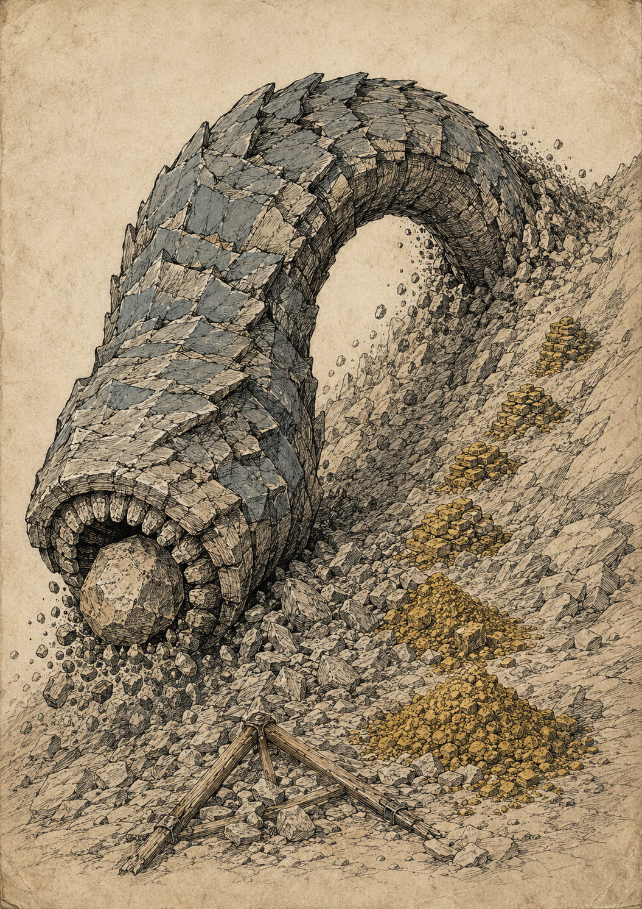 | 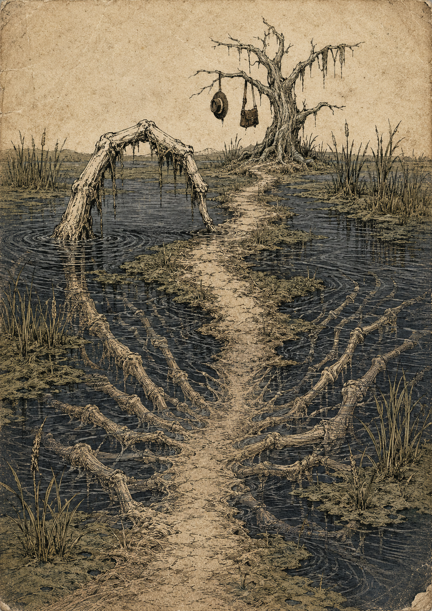 | 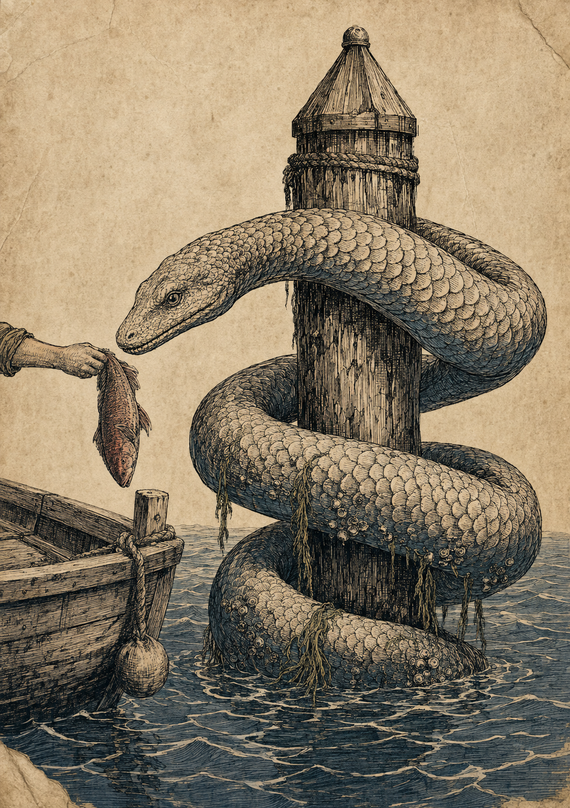 | |
| Gravel Wyrm (MON-06) | Mire Strangler (MON-07) | Reef Serpent (MON-08) | The Deepwater Maw (MON-09) |
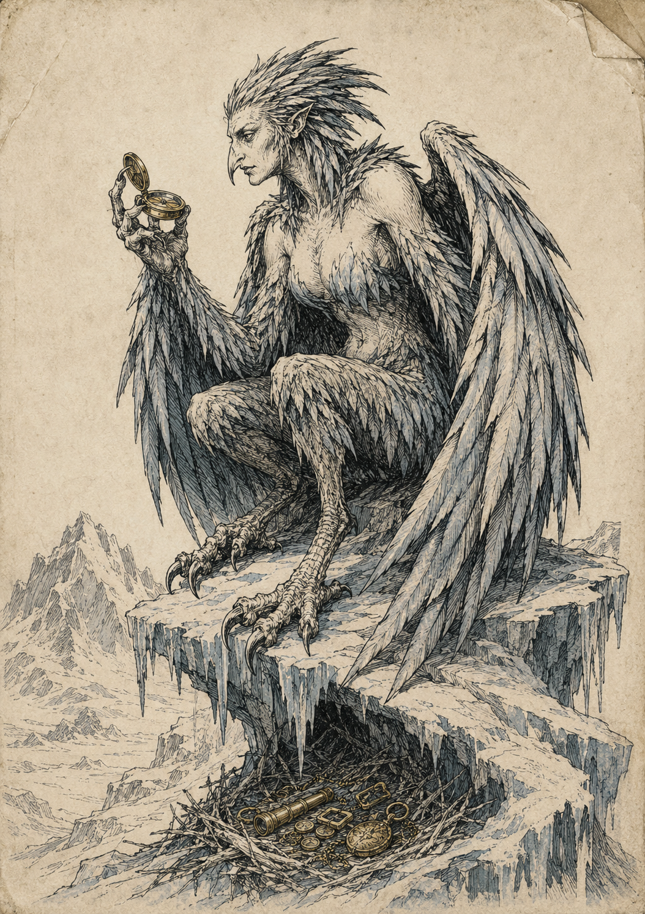 | 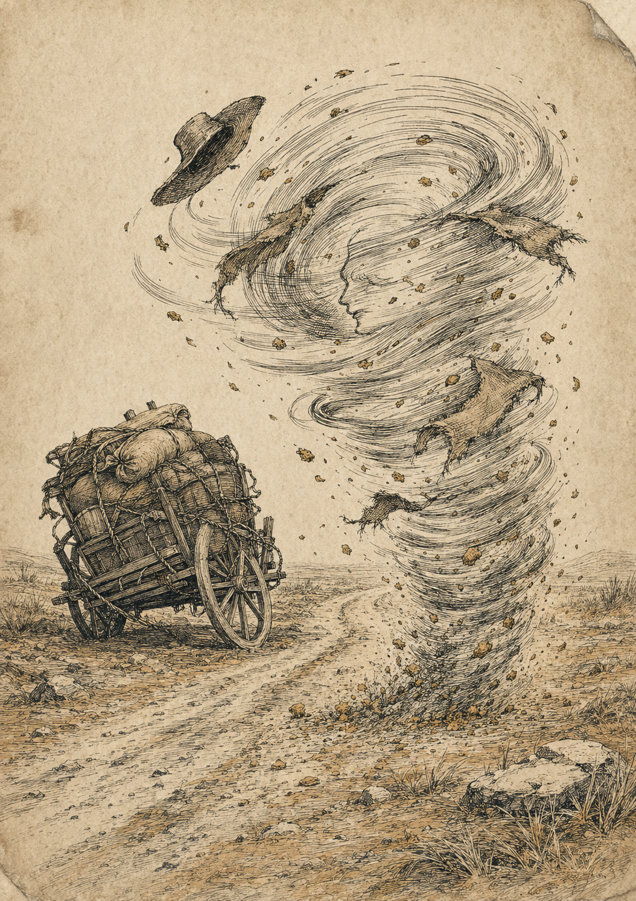 | 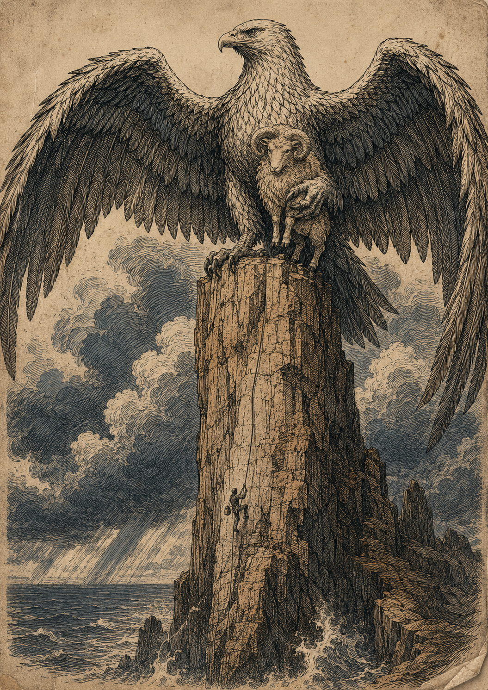 | |
| Rime Harpy (MON-10) | Dust Devil (MON-11) | Storm Roc (MON-12) |
An unresolved monster stays on its hex as a figure and attacks whoever ends a leg there. The wild accumulates.
Mana, talismans and spells
Slaying a monster yields its mana, element-matched. Mana is not a commodity: no bulk, no stockpile, no crate. It must be held — and almost nobody can hold it in the body. Elves carry up to 3 innately; humans, dwarves, halflings and orcs carry none at all. Everyone else's mana lives in a talisman (items.json, class talisman): a bone charm holds 2, a copper amulet 4, a crystal phylactery 10. Talismans are items — made, bought from merchants, sold, and stolen with everything that implies. The card prints the capacity in the M box of its summary strip; the charge is walked on the player board's M track, like every other number that moves.
All six talisman studies are accepted — the only deck that gets the violet, and the violet is a printing error, exactly as docs/art/prompts/talismans.md demands:
 | 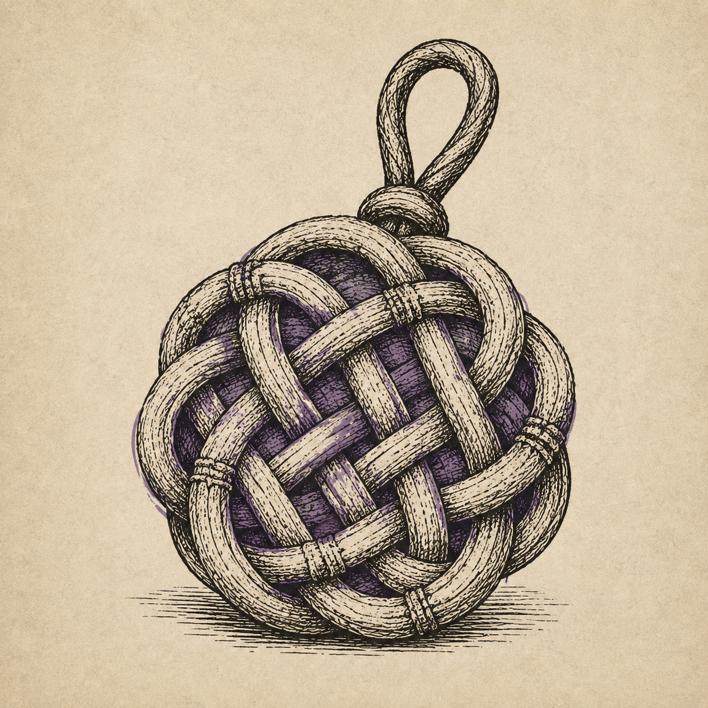 | 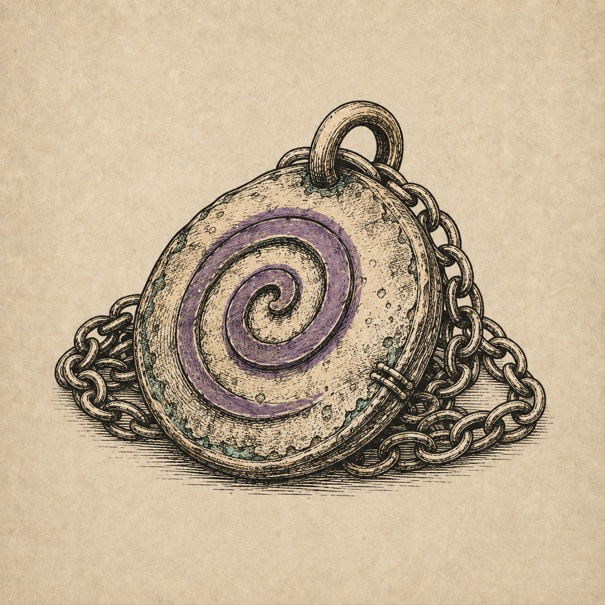 |
| Bone Charm (TAL-01) — holds 2 | Weaver's Knot (TAL-02) — holds 3 | Copper Amulet (TAL-03) — holds 4 |
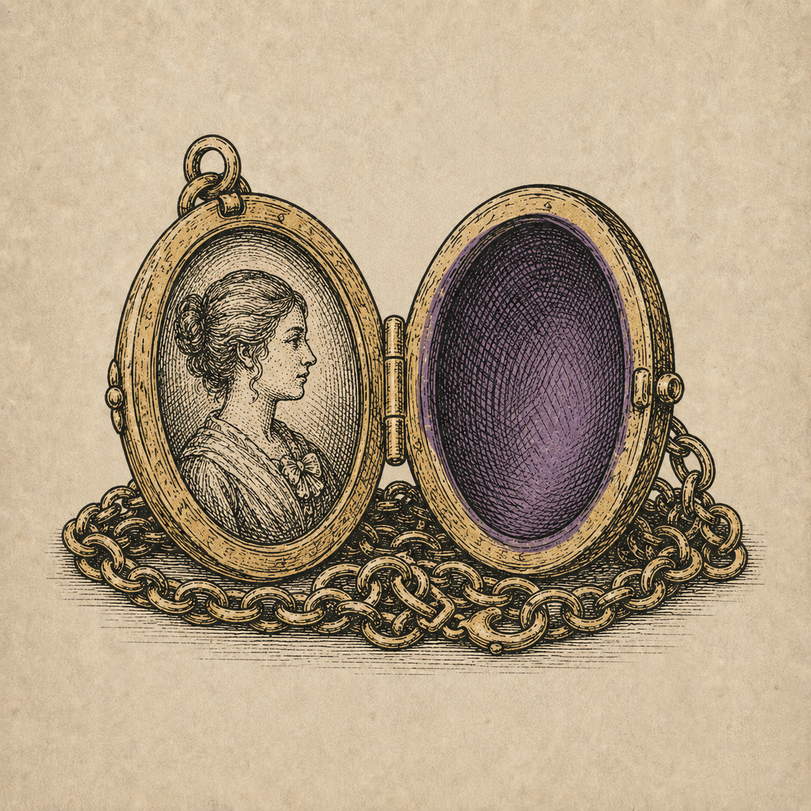 |  |  |
| Gold Locket (TAL-04) — holds 6 | Gemfire Pendant (TAL-05) — holds 8 | Crystal Phylactery (TAL-06) — holds 10 |
Mana is spent on spells (arcana.json): eight for now, two per element, a minor and a major. Like the potions, every one buys the things the game actually cares about — hours, movement, safety, repair — and none of them break the economy. Casting is one spell per character per round, and only characters cast.
Mana crystals (the commodity) are frozen mana: shatter one for 2 mana of any element, but mana never freezes back.
Merchants, inns and hired muscle
Merchants are met on the road (a discovery result) or visited in any settlement. Either way: shuffle the item deck and deal cards face up per rules.json → market.merchantStock — 2 for a roadside pedlar, 3 in a village, 5 in a town, 7 in a city, 9 at the Seat. That is the stock, this visit, at base value +10%. A bigger place is genuinely a better place to shop, and a roadside merchant with exactly the lantern you need is a small story the dice wrote.
Inns do four jobs, and every printed settlement has one:
- Rest — 2 health per round (3 with a healer in town), 5 coin, free at home.
- Hirelings — a thug (20/journey), a militiaman (35) or a hired blade (60) escorts one journey or one cargo. They eat nothing; the fee is everything. A thug will not face a monster of strength 4+.
- Rumours — pay 5 coin, draw a quest card, accept or decline.
- Drinks — the old job: serve ale to clear unrest, per the recipe.
Illness and healers
Illness arrived in the event deck: Camp Fever hits a travelling party, Marsh Ague hits a region, The Grey Pox hits every town of four or more workers, and the old Plague still stalks regions. The counters, in order of cost: a Healing Draught or Physic Tonic spent (potions), a healer specialist trained at the infirmary (a town with a fed healer loses no worker to any illness card), and Doctor Marrow or Tilly Goodbarrel in the character deck, who each ignore parts of it outright.
The pattern matches the rest of the deck: every illness card has a mitigation you could have bought in advance, and the infirmary is the building whose absence you get to regret by name.
Quests and campaigns
The quest deck (quests.json) is the choose-your-own layer: cards that arrive through discovery omens or inn rumours, are read aloud, and are accepted or declined on the spot. Declined cards go to the bottom for someone else.
They run a deliberate range of complexity, 1 to 5: from deliver 3 grain to Grist (an errand with a wage) through slay the thing behind Umber Hollow's missing-persons ledger, up to two staged campaigns — the Ironspine Road, which ends with cheap rail through the pass for whoever proved it, and the Drowned Bell of Taleowick, which ends with the Deepwater Maw. Campaign stages complete in order and pay per stage.
This is the part of the game designed to grow fattest over time. New quests are new cards; a new map brings its own; nothing else has to change.
Vehicles and characters
Two more decks give the moving pieces names:
Vehicles (vehicles.json) — twelve named machines, three each of train, ship, caravan and horse. A card is a specific vehicle with a story and a quirk: the Reach Flyer is fast and takes passengers, Old Smoke is cheap and limps, the Fenway Wagons cross marsh that stops everything else on wheels. Each card prints two boxes in its summary strip — H for the hull, C for the bulk of its hold. A vehicle in play is dealt a player board of its own and run like a player who is not a person: its card in the recess, its cargo and modifications in the four kit slots, and its hull on that board's health track. At nothing it is wrecked — it spills its cargo on the hex, and salvage is whoever reaches it first.
Eleven of the twelve catalogue plates are accepted (docs/art/prompts/vehicles.md); the Varl Wagonrow (VEH-09) is still to be drawn:
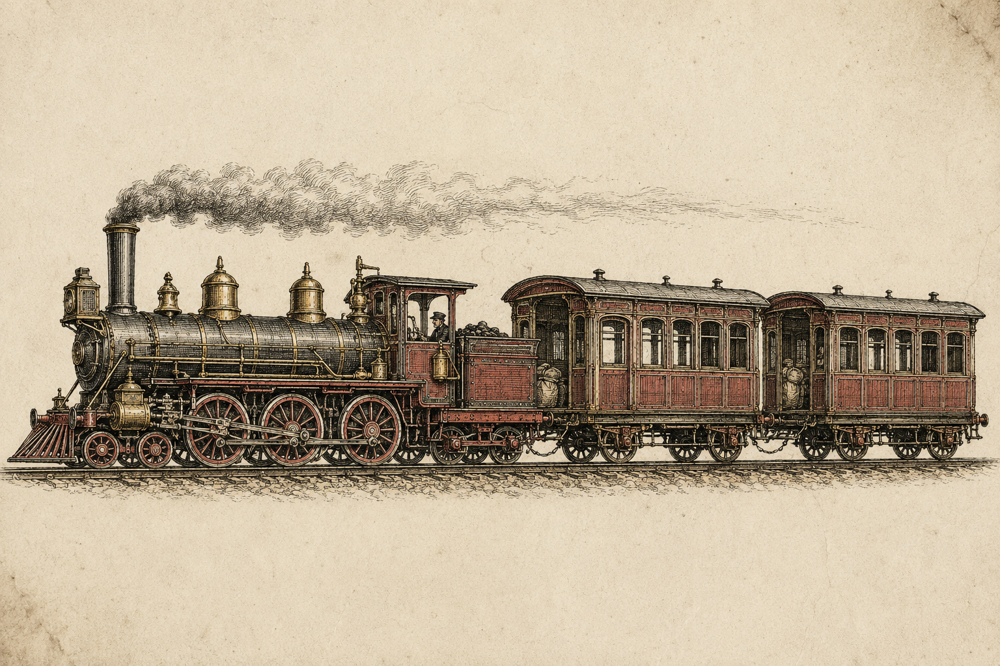 | 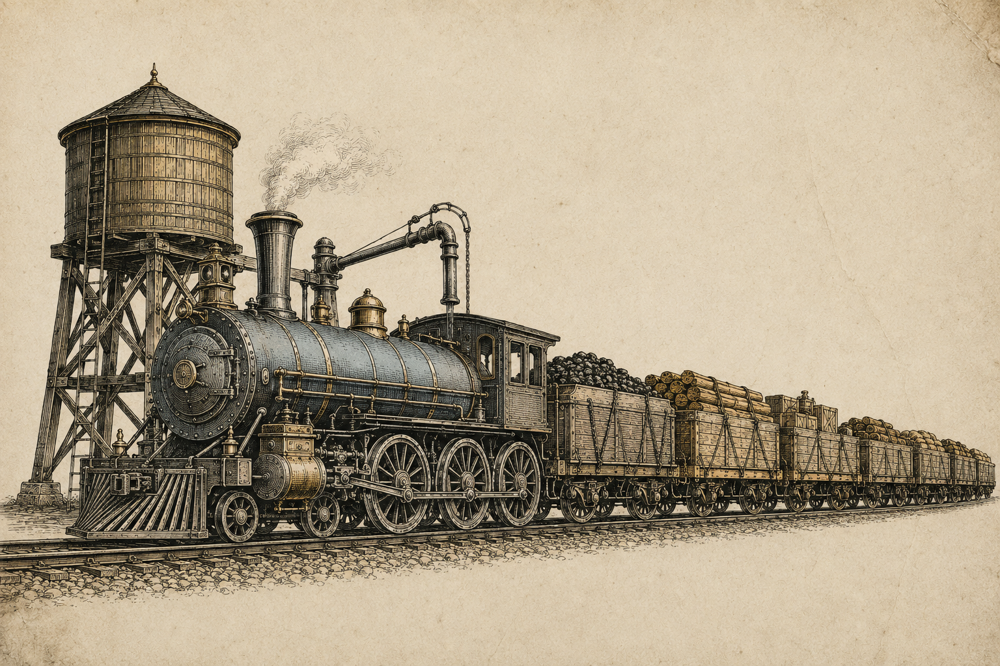 |  |
| The Reach Flyer (VEH-01) | Steppe Hauler (VEH-02) | Old Smoke (VEH-03) |
 | 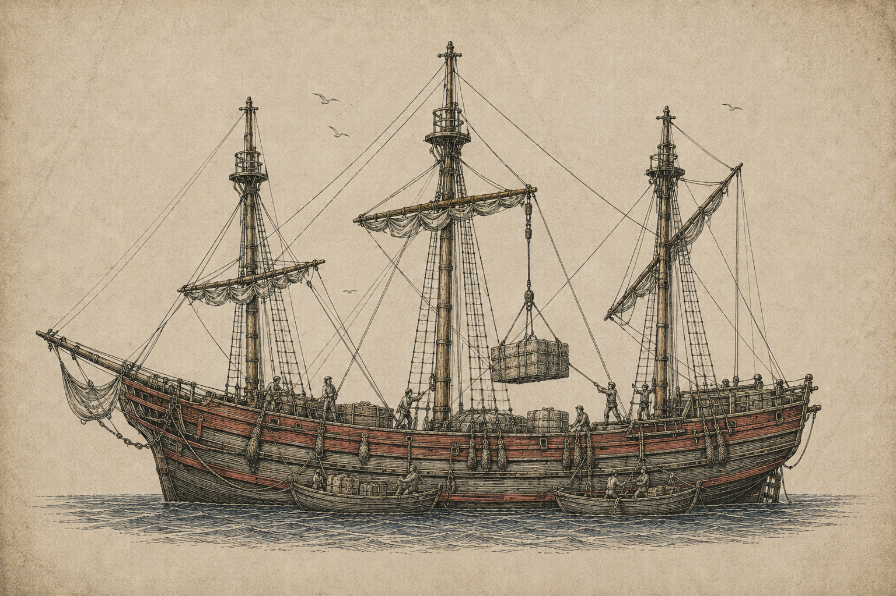 |  |
| Gullwing (VEH-04) | Saltreach Pride (VEH-05) | Ember Coast Trader (VEH-06) |
 | 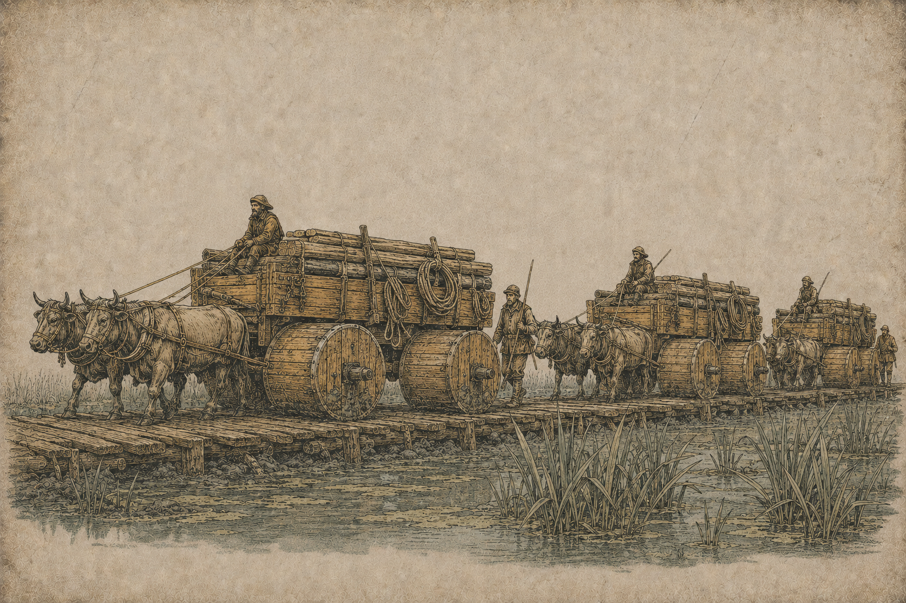 | 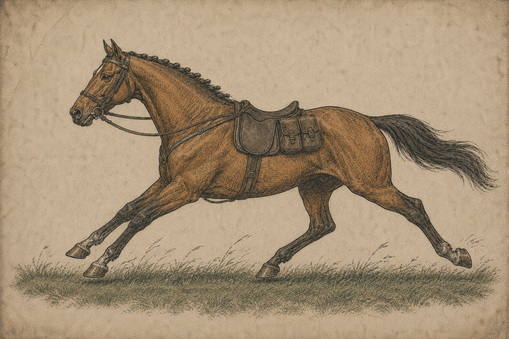 |
| The Dunhaven Column (VEH-07) | The Fenway Wagons (VEH-08) | Bay Courser (VEH-10) |
 |  | |
| Steppe Pony (VEH-11) | Black Malchior (VEH-12) |
Characters (characters.json) — eight named adventurers; each player's hero figure takes one at setup for a face and a summary strip across the top of the card, which is every number they have, printed once:
| H | S | D | M | ¤ | KG |
|---|---|---|---|---|---|
| health | strength | defence | mana held in the body | coin at setup | what they can shoulder |
Those are the player board's own track letters, so setting up is reading across the strip and putting tokens down left to right. Nothing on the card moves — there is no bar on any card any more — and the portrait gets the full width of the card because there is nothing beside it.
Strength — one arm, one number
Every item in items.json carries a mass in kilograms, and strength is the other half of that arithmetic. There is no burden number and no burden track: what a character can shoulder is strength × 3 kilograms, printed in the KG box so nobody multiplies at the table and derived so it can never disagree with the strength beside it. Ruk of the Red Road is strength 6 and carries 18 kg, the most of anyone; Old Mother Keswick is strength 2 and carries 6. A tunic is half a kilogram, a sword three-quarters, a plate harness 12.5 — which is to say plate is for figures of strength 5 and up, and always was.
Nothing is walked for it. Total what the character is wearing, wielding and stowing, and it either fits under the printed limit or it does not: load the rest onto a vehicle, hand it to someone with room, or leave it where it lies. A character carried to a settlement at 0 health loses the lot on the way.
Burden and strength were the same arm doing the same job under two numbers, and one of them was a track a player moved every time they picked up a rope.
Mass is not bulk. Bulk is a commodity's storage-slot and shipping cost and belongs to the cart; mass is what a thing weighs and belongs to whoever is holding it. They never convert into each other, and nothing in the data has both. Full rules in rules.json → carrying; the whole item table with masses is in the annex.
Defence — what makes a blow miss
Every character and every monster now carries a defence as well as a strength, and the attack roll is the difference between the two: less your own strength, plus their defence, clamped to 2+ and 6+. Strength used to sit on both sides of that roll, which quietly made every strong thing armoured — a stone boar barely swings and turns a sword, and until now it had no way to say so. Defence is not armour: armour soaks hits after they land, defence stops them landing, and a figure in plate has both.
Eating and sleeping
Two kinds of hurt, mended two different ways, and the split is what makes a night's camp a decision rather than a formality:
- A round that ends with a figure unfed costs 1 health. Every round it goes on. Being fed again does not put it back.
- A night without a camp costs 1 strength — travel a night leg, or push on past dark, and every figure in the party loses a point. Two hard nights turn a caravan guard into a passenger.
- One night's sleep restores strength in full, wherever it is taken: a camp on open ground does it as well as a bed at an inn.
- Sleeping mends no health at all. Health comes back only under medical aid — a healer, an infirmary, a physician standing there, or a potion.
That is why a lantern, a granary, an inn, a stretch of salted meat and Doctor Elspeth Marrow are all worth their coin, and why the shorter leg with a camp at the end of it often beats the longer one without.
All eight character plates are accepted (docs/art/prompts/characters.md):
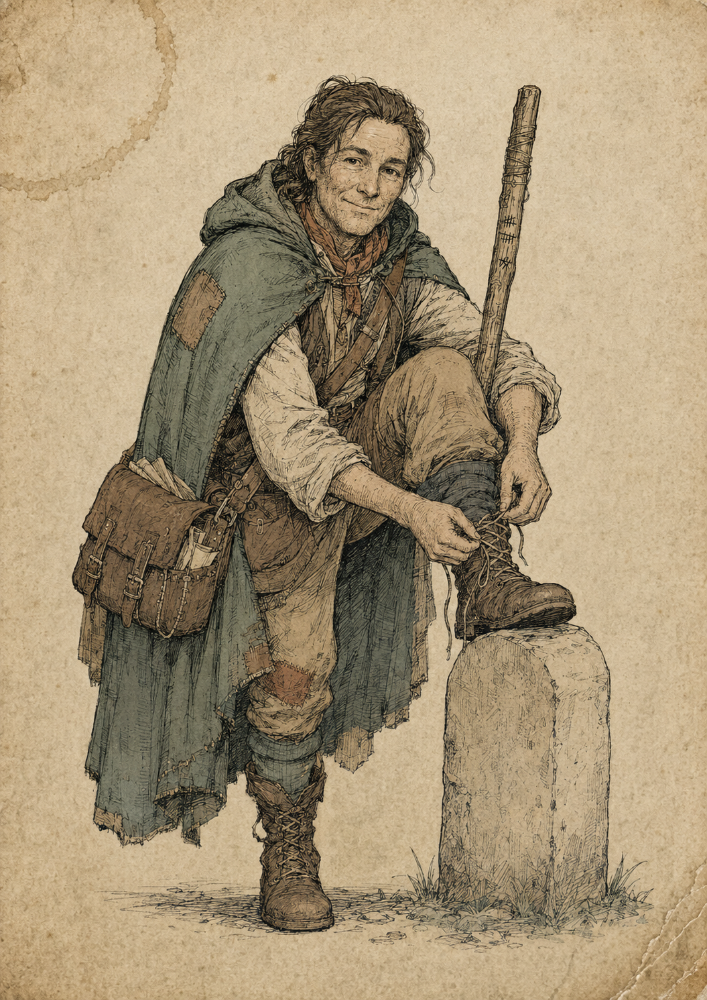 | 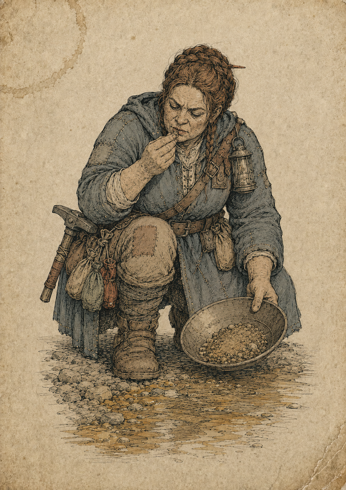 | 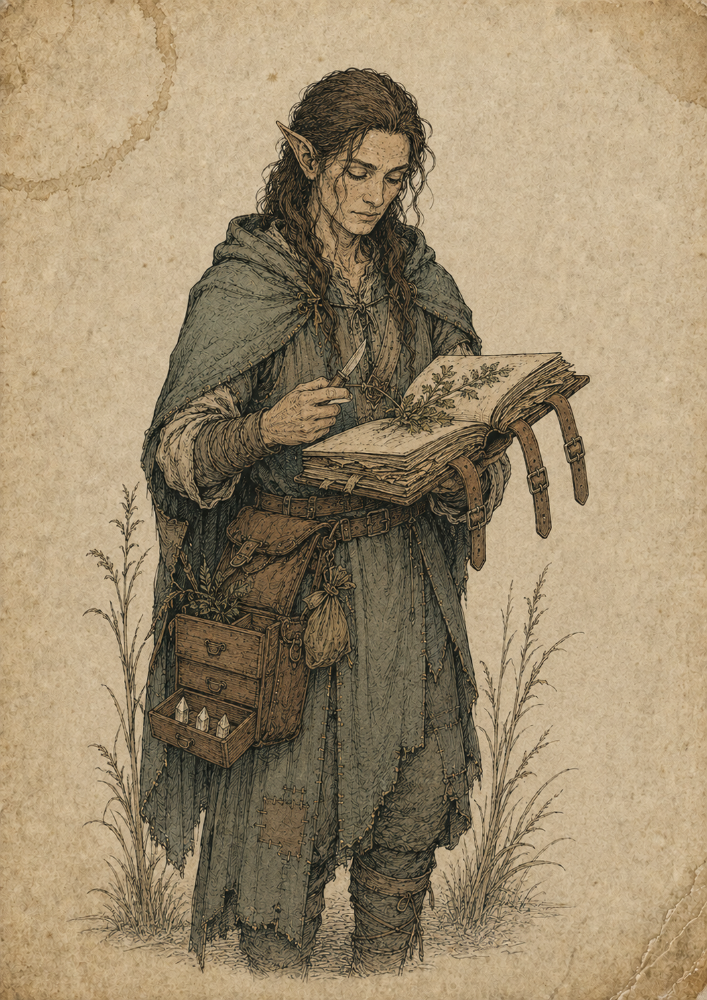 | 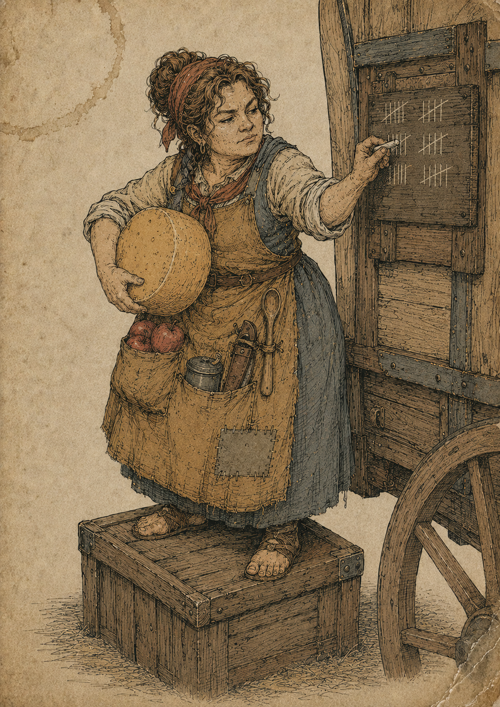 |
| Corin Vale (CHR-01) | Berga Understone (CHR-02) | Sylvae of the Duskmere (CHR-03) | Tilly Goodbarrel (CHR-04) |
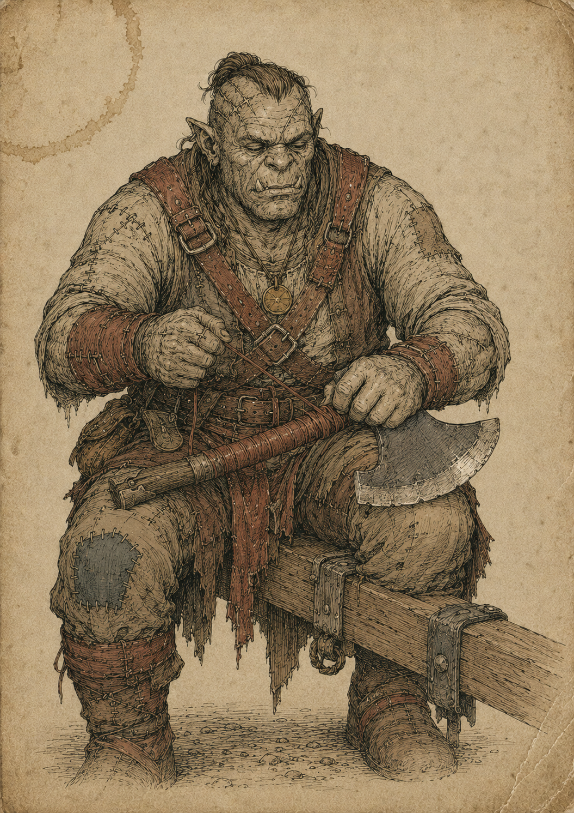 | 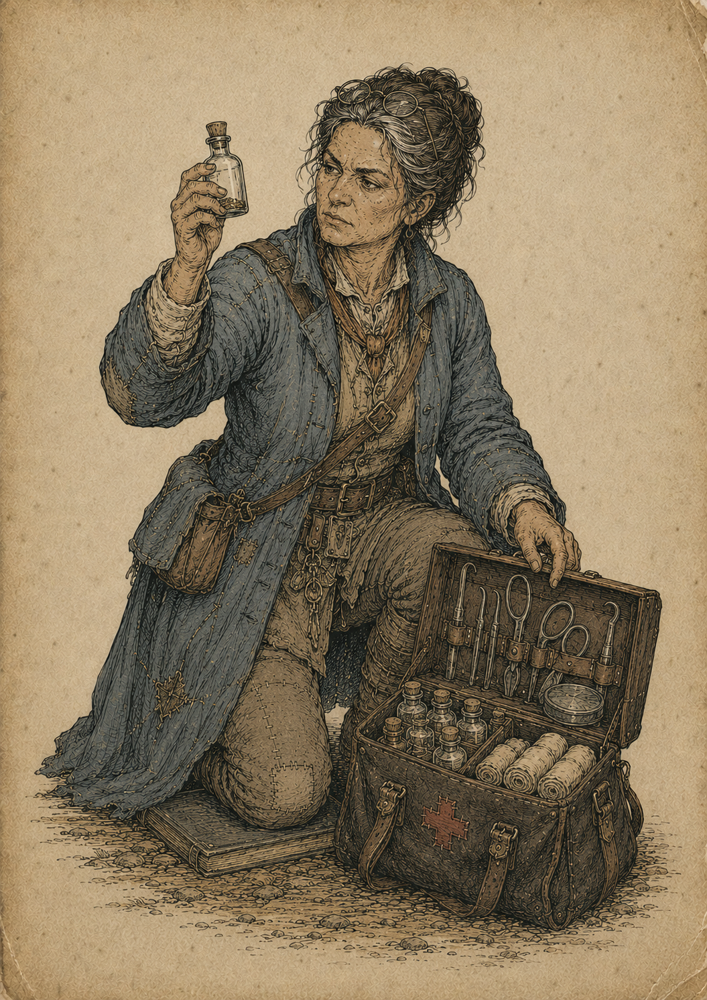 | 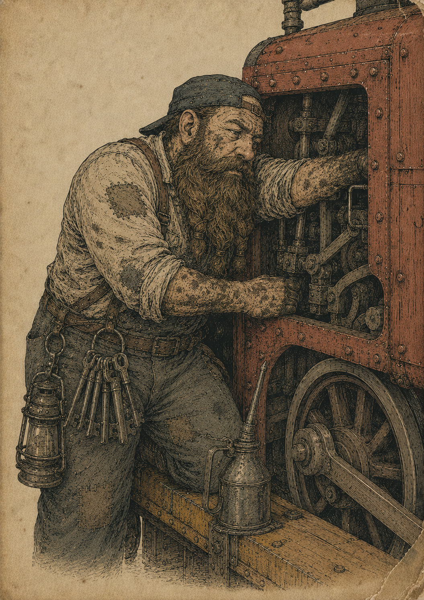 | 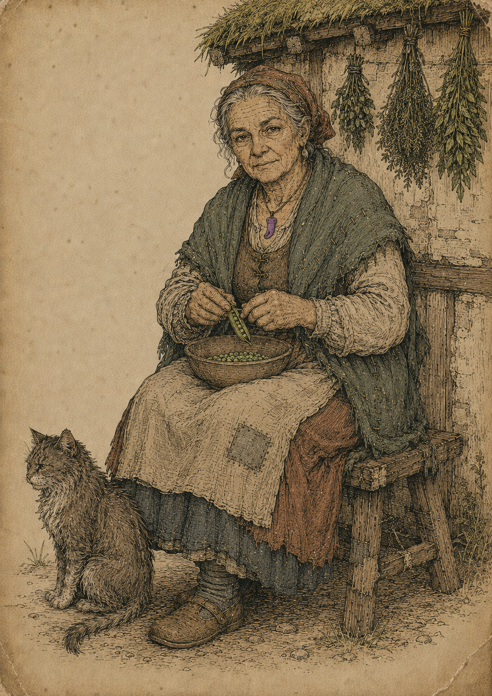 |
| Ruk of the Red Road (CHR-05) | Doctor Elspeth Marrow (CHR-06) | Havik Coalbrand (CHR-07) | Old Mother Keswick (CHR-08) |
Card codes. Every card carries a deck prefix and sequence — VEH-03, MON-09, QST-07, TAL-06, CHR-01 — with a v2 suffix if a card is ever reprinted changed. The scheme is defined in vehicles.json → cardIdScheme. The code is print identity, not data identity: the id field is the identity, and anyone forking the game is free to renumber.
Card fronts. tools/build-cards.mjs renders the fronts for these four decks — characters, vehicles, monsters and talismans — from data/*.json and the accepted plates, into docs/cards/, to the two-plate layer contract. Only a card whose plate has been accepted is rendered; edit the data or the renders, re-run the tool, and never the SVGs.
Each deck's portrait window is the shape of that deck's plates, as tall as its wordiest card leaves room for, and what fills it is a crop taken around the plate's subject from docs/art/framing.json — a card shows a character's face and hands, not the middle of the page they were drawn on. The explorer's deck thumbnails crop through the same code.
Printing them. docs/cards/print.html collates any selection of these cards onto A4 or US Letter at a true 63 × 88 mm — nine to a sheet of A4 — each with a dotted line on its trim to cut along and its 3 mm of bleed held outside that line. A cut card is the size of a standard playing card, which is the point: it glues onto one and shuffles with the rest of the deck.
Mini-maps
Some moments need more board than a single hex: a battle, a boarding action, a farm becoming a village becoming a walled town. These resolve on mini-maps — A4 landscape sheets, each dominated by one large hexagon subdivided into small hexes, representing the inside of a single cell of the campaign map.
Three series, specified in docs/minimaps/:
- Holdings — four blank settlement sheets, one per player, kept in front of you for as long as your farm, village or town stands on the big map.
- Grounds — one battle sheet per land terrain plus the shallows, pulled out when an encounter needs positioning and put away when it is done.
- Places — one sheet per named settlement on the Korvane Reach, used when play goes inside Vossgard or Dunhaven or Fen's End.
The side panels either side of the hexagon are working space: the left panel is the encounter tracker (initiative, round, morale), the right panel is the holdings ledger (buildings, garrison, stores). A battle sheet uses the left; a settlement sheet mostly the right; both are printed on every sheet so no sheet is ever the wrong sheet.
All thirty-two sheet artworks are accepted and live in docs/minimaps/img/ — one of each series:
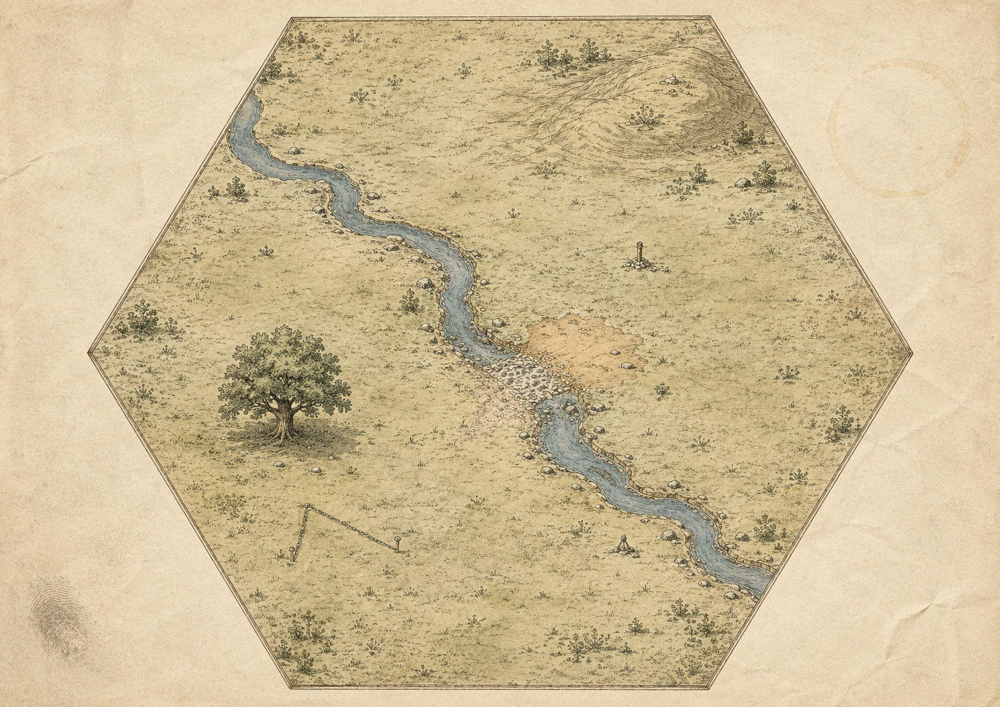 | 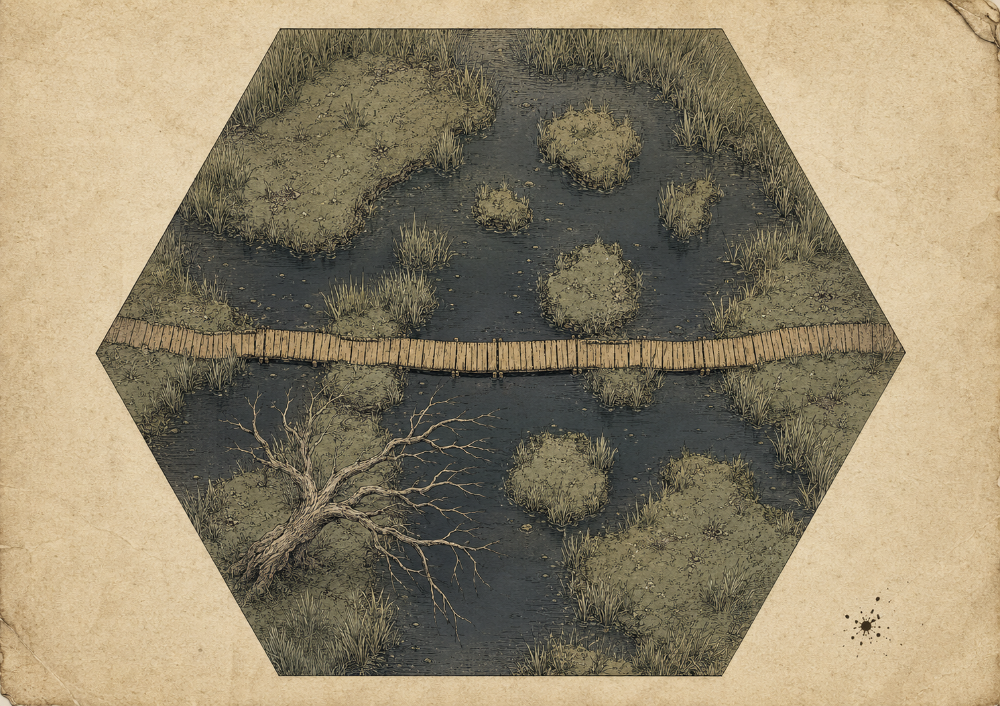 | 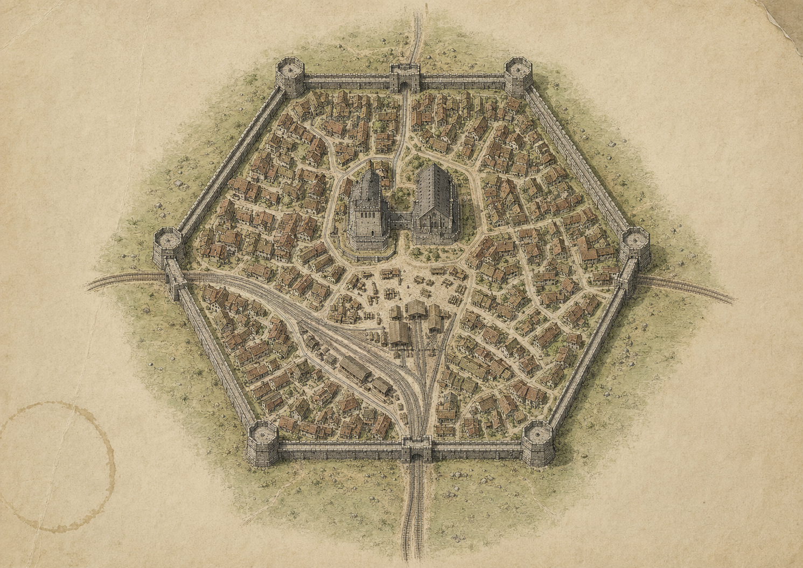 |
| Holdings: The River Meadow (PSM-01) | Grounds: marsh (TBM-05) | Places: Vossgard (SET-01) |
The player board
The adventure layer arrived one card at a time — a health bar here, a burden bar there, a mana bar inboard of that one — and every bar was on an edge, which is the right place for a card you are holding and the wrong place for one lying on the table. The player board is where they all ended up, and taking them off the cards is what gave the portraits the full width of the card.
One A4 landscape sheet each and every one identical, printed at docs/boards/. The card in play drops into a recess top left, four more recesses take whatever that card has in play, the round's phases print underneath, and five numbered tracks run up the middle:
| Track | A rung is | Runs | Walked by | |
|---|---|---|---|---|
| H | Health | 1 | 0–14 | The figure, hurt and mended — medical aid only |
| S | Strength | 1 | 0–14 | Set from the card; a rung down for every night without a camp |
| D | Defence | 1 | 0–14 | Set from the card. Read by whoever is attacking you |
| P | Pace | 1 hex | 0–14 | Hexes left in this leg |
| M | Mana | 1 | 0–14 | The body and every talisman in a slot |
The ladders are numbered from the bottom and walked by a token, and they are numbered and nothing else — no rung glyph, no plus, no minus. At a shade over 13 mm a column, a little mark saying which kind of number this is was competing with the figure for the same three millimetres. Which way a token walks is a sentence in the rulebook, where there is room to say it.
Pace is the board's own, and it is the one that was missing. A party looks its day-leg speed up in travel.json every single round of the game and has never had anywhere to keep it: set the token at the start of a leg, walk it down a rung per hex entered, halve it for a night leg under a lantern. At zero the leg is over, and the discovery roll happens wherever it stopped. It is pace rather than speed because strength has the S.
A vehicle gets a board too. It used to get a column — a sixth track called V, counting damage on a wagon most players were not running, printed on everybody's sheet. A vehicle in play is dealt one of these boards instead and run like a player who is not a person, exactly as a monster met on the road is: its card in the recess, its cargo and its modifications in the four kit slots, and its hull on the health track, set from the printed H, down as it is damaged, up as it is repaired at 5 coin a rung in any town, wrecked at nothing and spilling its cargo on the hex. A hull is a body, and the board never had to learn anything new to run one.
Strength and defence are the pair that changed the game rather than recording it. Strength was already printed on every monster card as a threat rating; it now settles attack rolls as well, and it swallowed burden while it was at it — what a figure carries is strength × 3 kilograms and there is no second track for it. Defence is its opposite number: shift the number you need by less your own strength, plus their defence, so an even fight still hits on 4+ and a point of advantage is worth exactly one pip. Neither ever adds dice; dice are what weapons and armour give you. The full rule is in 08-components.md.
Every track runs 0 to 14, and so does the game. That is the ceiling on everything a token walks — health (a hull included), strength, defence, mana — and tools/validate-data.mjs sweeps the whole dataset against it, so a fifteenth point of health fails the build rather than walking off a board somebody has already printed. Kilograms are the one thing exempt, because nothing walks a token for them.
Print one more board than there are players. The spare is the encounter board: a discovery roll that turns up a monster or a stranger deals their card onto it, its tracks are set from the card's summary strip, and it is played like any other seat at the table until the encounter is over. That is what being generic is for — the furniture does not care whether a person or a wolf is sitting behind it.
The board is otherwise furniture, not a fifth deck. What it fixes is that a hero in play was four tokens on three cards and a number somebody was holding in their head.
What this layer deliberately does not do
No experience points, no levels, no skill trees. A character gets better the way a town does: by owning better things and standing nearer the railway. The economy remains the progression system — the adventure layer is a new set of ways to spend hours and a new set of things the hours can buy.
14 — Annex: the reference tables
Generated by
tools/build-annex.mjs— do not edit by hand. Edit the data indata/*.json, run the tool, and commit both. Every number here is the same number the explorer and the simulator read.
The web of things
Before the tables, the shape of them: every thing in the game and every arrow between them, computed from the same cross-file references tools/validate-data.mjs checks — so this picture cannot know a tie the validator does not enforce. An arrow points from the thing whose data names the other, at the thing it names: a job points at the ore it takes in, the iron it puts out and the smelter it runs in alike. The explorer’s Graph tab is this same drawing, live — pan it, drag it, click any dot for its entry.
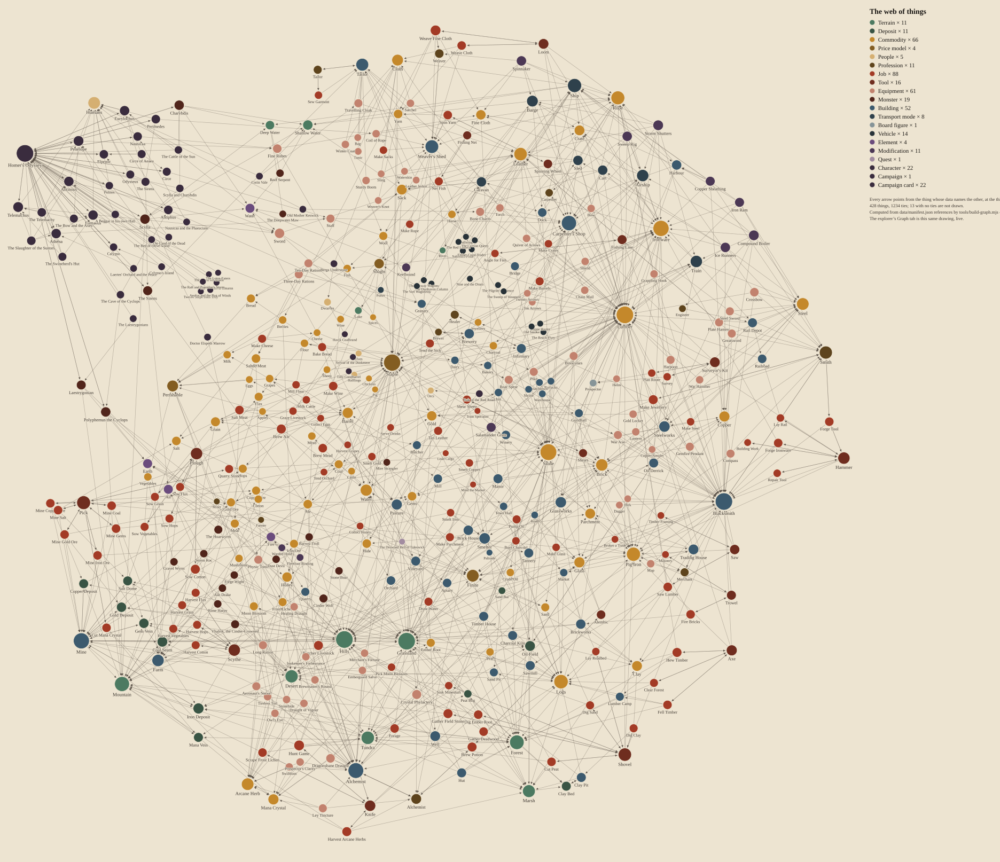
Terrain
The letter code is printed in the bottom corner of every hex on every map. It is the ruling when the artwork straddles a grid line, and it keys the travel and discovery tables below.
| Code | Terrain | Move | Road × | Rail × | Features | Deposits |
|---|---|---|---|---|---|---|
| G | Grassland | 1 | 1 | 1 | trees-sparse | clay-bed, coal-seam, iron-deposit, salt-dome, oil-field, gold-deposit |
| F | Forest | 2 | 2 | 2 | trees-dense, game, herbs | clay-bed, iron-deposit, mana-vein |
| H | Hills | 2 | 2 | 3 | stone, game, caves | coal-seam, iron-deposit, copper-deposit, gold-deposit, gem-vein, mana-vein |
| M | Mountain | 4 | 4 | 6 | stone, herbs, caves | coal-seam, iron-deposit, copper-deposit, gold-deposit, gem-vein, mana-vein |
| B | Marsh | 3 | 3 | 4 | reeds, herbs, fresh-water | clay-bed, peat-bog, oil-field |
| T | Tundra | 2 | 2 | 2 | game | coal-seam, iron-deposit, oil-field, peat-bog |
| D | Desert | 2 | 2 | 2 | sand, salt | salt-dome, oil-field, gem-vein |
| R | River | boat | — | — | fish, fresh-water, reeds | — |
| L | Lake | boat | — | — | fish, fresh-water, reeds | — |
| S | Shallow Water | boat | — | — | fish | — |
| O | Deep Water | boat | — | — | fish | — |
Travel speeds — hexes per day leg
| Mode | G | F | H | M | B | T | D | R | L | S | O |
|---|---|---|---|---|---|---|---|---|---|---|---|
| On Foot | 4 | 2 | 2 | 1 | 1 | 2 | 2 | — | — | — | — |
| Mounted | 6 | 2 | 3 | 1 | 1 | 3 | 3 | — | — | — | — |
| Cart | 3 | 1 | 1 | — | — | 1 | 2 | — | — | — | — |
| Caravan | 2 | 1 | 1 | — | — | 1 | 2 | — | — | — | — |
| Barge | — | — | — | — | — | — | — | 3 | 3 | 3 | — |
| Ship | — | — | — | — | — | — | — | — | — | 3 | 5 |
| Sled | 1 | 1 | 2 | 2 | 2 | 5 | — | 2 | 2 | 2 | — |
| Airship | 5 | 5 | 5 | 4 | 5 | 5 | 5 | 5 | 5 | 5 | 5 |
Overrides: On a Road — on-foot 5, mounted 8, cart 6, caravan 4; On Rail — train 6.
Night legs
| Light | Night speed |
|---|---|
| None | No travel at all, even on a road |
| Torch | 1 hex (2 on a road); spends one use |
| Lantern | Half day speed, rounded up |
| Owl’s Eye potion | As a lantern, for one round |
A night leg triggers a second discovery roll with the monster band widened by 1. Trains run at night at full speed with a lantern fitted; ships sail at half speed with one rigged. Caves can only be entered with a lit torch or lantern.
Discovery tables — d20, roll where the leg ends
One roll per movement leg, on the table for the hex you stopped in. A road or rail on the hex overrides its terrain. Persistent results are marked on the hex with a tile or figure.
| Table | Bands |
|---|---|
| Grassland (G) | 1 bandits · 2-4 traveller · 5-14 nothing · 15-16 commodity-trace · 17-19 monster · 20 quest-omen |
| Forest (F) | 1 bandits · 2-3 traveller · 4-11 nothing · 12-14 commodity-trace · 15-19 monster · 20 quest-omen |
| Hills (H) | 1 bandits · 2-3 traveller · 4-10 nothing · 11-13 commodity-trace · 14-15 cave-mouth · 16-19 monster · 20 quest-omen |
| Mountain (M) | 1 hazard · 2 traveller · 3-8 nothing · 9-11 commodity-trace · 12-14 cave-mouth · 15-19 monster · 20 quest-omen |
| Marsh (B) | 1 hazard · 2 traveller · 3-10 nothing · 11-12 commodity-trace · 13-19 monster · 20 quest-omen |
| Tundra (T) | 1-2 hazard · 3 traveller · 4-11 nothing · 12-13 commodity-trace · 14-19 monster · 20 quest-omen |
| Desert (D) | 1-2 hazard · 3 traveller · 4-9 nothing · 10-11 commodity-trace · 12-19 monster · 20 quest-omen |
| River (R) | 1-2 hazard · 3-5 traveller · 6-13 nothing · 14 flotsam · 15-16 merchant · 17-19 monster · 20 quest-omen |
| Lake (L) | 1 hazard · 2-3 traveller · 4-13 nothing · 14-15 flotsam · 16-19 monster · 20 quest-omen |
| Shallow Water (S) | 1 hazard · 2-3 flotsam · 4-13 nothing · 14-15 pirates · 16-19 monster · 20 quest-omen |
| Deep Water (O) | 1-2 hazard · 3 flotsam · 4-12 nothing · 13-15 pirates · 16-19 monster · 20 quest-omen |
| On a Road | 1-2 bandits · 3-7 merchant · 8-10 traveller · 11-17 nothing · 18-19 monster · 20 quest-omen |
| On the Rail | 1-2 bandits · 3-5 merchant · 6-7 traveller · 8-17 nothing · 18-19 monster · 20 quest-omen |
| Inside a Cave | 1-2 hazard · 3-8 nothing · 9-12 commodity-trace · 13-16 monster · 17-19 hoard · 20 quest-omen |
Monster element weights by table:
| Table | Fire | Earth | Water | Air |
|---|---|---|---|---|
| Grassland (G) | 1 | 2 | 1 | 2 |
| Forest (F) | 1 | 3 | 1 | 1 |
| Hills (H) | 2 | 3 | 0 | 1 |
| Mountain (M) | 2 | 2 | 0 | 2 |
| Marsh (B) | 0 | 2 | 3 | 1 |
| Tundra (T) | 0 | 1 | 2 | 3 |
| Desert (D) | 3 | 2 | 0 | 2 |
| River (R) | 0 | 2 | 3 | 1 |
| Lake (L) | 0 | 1 | 3 | 1 |
| Shallow Water (S) | 0 | 0 | 4 | 1 |
| Deep Water (O) | 0 | 0 | 4 | 1 |
| On a Road | 1 | 2 | 1 | 1 |
| On the Rail | 1 | 2 | 0 | 1 |
| Inside a Cave | 2 | 3 | 1 | 0 |
The market
Every Market phase, per commodity line in play: roll two red dice for demand, two blue for supply and one green for elasticity, add what the line remembers, and read the result on the swing ruler printed across the foot of the market board.
(Demand − Supply + Memory) × Elasticity| Dice | Colour | Range | What it is |
|---|---|---|---|
| 2 d6 | red | 2–12 | Demand |
| 2 d6 | blue | 2–12 | Supply |
| 1 d6 | green | 1–6 | Elasticity |
| Green die | Elasticity | ||
|---|---|---|---|
| 1–2 | ×1 | Stable | An ordinary season. The swing is felt as it fell. |
| 3–4 | ×2 | Volatile | A thin market with nobody willing to stand in the middle of it. Every point of the swing counts double, and this is where crashes and spikes come from. |
| 5–6 | ÷2 | Inelastic | The town needs it whatever it costs, or cannot use a second one at any price. Half the swing, dropped toward zero - most inelastic seasons do not move the price at all. |
Halving rounds toward zero, so an inelastic season can shrink a swing away to nothing but can never turn it around.
The swing ruler
| Net | ≤ −16 | −15 … −8 | −7 … −2 | −1 … +1 | +2 … +7 | +8 … +15 | ≥ +16 |
|---|---|---|---|---|---|---|---|
| Bands | −3 | −2 | −1 | hold | +1 | +2 | +3 |
| crash | slump | soften | hold | firm | rally | spike |
The board sells no more of a commodity in a round than that round's supply roll, first come first served in turn order. It will buy any quantity.
What a market remembers
Each line carries a tally of the board's own stock — up one cell per token sold to the board, down one per token bought off it — and a modifier from −3 to +3 that the tally moves. Every 4 tokens the tally fills, which takes it back to empty and steps the modifier one cell. Which way it steps is the commodity's own model, and the model's mark is engraved in the corner of that commodity's token.
| Model | Memory | Tally | What it is |
|---|---|---|---|
| Glut | −3 to 0 | −1 when full | What does not sell rots. Anything grown, felled, herded or made to order - which is most of the game. If a player can decide to produce more of it next round, its price can be drowned. |
| Hype | −3 to +3 | — | It is bought because it is going up. The luxury trade: low bulk, high value, wanted for what it is rather than for what it does. |
| Depletion | 0 to +3 | +1 when full | The easy ore came out first. Anything a deposit yields, and anything smelted straight out of one. tools/validate-data.mjs checks the first half of that: a commodity a deposit yields and does not price by depletion is a hole in the ground that never runs dry. |
Three markets, played
One scenario per model, with the dice chosen to show what each one does. Everything after the dice is worked from the tables above rather than transcribed, so these cannot drift out of true. Trading happens in the Actions phase at the price already on the board; the Market phase then fixes the price for the round to come.
A good harvest — Grain · Glut
Bram has a farm and a surplus, and sells it into his own town three rounds running. Base value 5¤; every token starts on ×1, memory 0, tally 0.
| # | Actions phase | D − S | Mem | Green | Net | Bands | Price now | Mem after | Tally |
|---|---|---|---|---|---|---|---|---|---|
| 1 | sells 3 at 4.25¤ = 12.75¤ · tally 3 | 7 − 11 | 0 | ×1 | −4 | −1 | ×0.75 (3.75¤) | 0 | 3 |
| 2 | sells 3 at 3.19¤ = 9.56¤ · tally fills → memory −1, tally 1 | 11 − 5 | −1 | ×2 | 10 | +2 | ×1.25 (6.25¤) | −1 | 1 |
| 3 | sells 4 at 5.31¤ = 21.25¤ · tally fills → memory −2, tally 0 | 6 − 8 | −2 | ×1 | −4 | −1 | ×1 (5.00¤) | −2 | 0 |
| 4 | — | 9 − 7 | −2 | ×2 | 0 | hold | ×1 (5.00¤) | −1 | 0 |
| 5 | — | 12 − 3 | −1 | ×2 | 16 | +3 | ×2 (10.00¤) | 0 | 0 |
After five rounds: ×2 — Grain at 10.00¤ a sack — with the memory on 0. What does not sell rots.
A run on gold — Gold · Hype
Nobody trades a single ingot. A hype line does all of this on its own. Base value 40¤; every token starts on ×1, memory 0, tally 0.
| # | Actions phase | D − S | Mem | Green | Net | Bands | Price now | Mem after | Tally |
|---|---|---|---|---|---|---|---|---|---|
| 1 | — | 11 − 5 | 0 | ×1 | 6 | +1 | ×1.25 (50.00¤) | +1 | — |
| 2 | — | 9 − 6 | +1 | ×1 | 4 | +1 | ×1.5 (60.00¤) | +2 | — |
| 3 | — | 7 − 8 | +2 | ×1 | 1 | hold | ×1.5 (60.00¤) | +1 | — |
| 4 | — | 4 − 11 | +1 | ×2 | −12 | −2 | ×1 (40.00¤) | 0 | — |
| 5 | — | 6 − 9 | 0 | ×2 | −6 | −1 | ×0.75 (30.00¤) | −1 | — |
After five rounds: ×0.75 — Gold at 30.00¤ a ingot — with the memory on −1. It is bought because it is going up.
The seam runs out — Iron Ore · Depletion
Ilsa opens a mine and ships everything she digs. The rolls are ordinary throughout. Base value 6¤; every token starts on ×1, memory 0, tally 0.
| # | Actions phase | D − S | Mem | Green | Net | Bands | Price now | Mem after | Tally |
|---|---|---|---|---|---|---|---|---|---|
| 1 | sells 4 at 5.10¤ = 20.40¤ · tally 4 | 8 − 9 | 0 | ×1 | −1 | hold | ×1 (6.00¤) | 0 | 4 |
| 2 | sells 4 at 5.10¤ = 20.40¤ · tally fills → memory +1, tally 3 | 8 − 7 | +1 | ×1 | 2 | +1 | ×1.25 (7.50¤) | +1 | 3 |
| 3 | sells 4 at 6.38¤ = 25.50¤ · tally fills → memory +2, tally 2 | 9 − 8 | +2 | ×1 | 3 | +1 | ×1.5 (9.00¤) | +2 | 2 |
| 4 | sells 3 at 7.65¤ = 22.95¤ · tally fills → memory +3, tally 0 | 7 − 10 | +3 | ×1 | 0 | hold | ×1.5 (9.00¤) | +3 | 0 |
| 5 | — | 7 − 8 | +3 | ×1 | 2 | +1 | ×2 (12.00¤) | +3 | 0 |
After five rounds: ×2 — Iron Ore at 12.00¤ a load — with the memory on +3. The easy ore came out first.
Commodities
| Commodity | Category | Bulk | Value | Prices by | Perishes | Tags |
|---|---|---|---|---|---|---|
| Logs | raw | 2 | 4 | Glut | — | bulky |
| Stone | raw | 2 | 5 | Glut | — | bulky |
| Clay | raw | 2 | 3 | Depletion | — | bulky |
| Sand | raw | 2 | 2 | Depletion | — | bulky |
| Iron Ore | raw | 2 | 6 | Depletion | — | bulky, ore |
| Copper Ore | raw | 2 | 7 | Depletion | — | bulky, ore |
| Gold Ore | raw | 2 | 14 | Depletion | — | bulky, ore |
| Salt | raw | 1 | 6 | Depletion | — | preservative |
| Water | raw | 1 | 1 | Glut | — | liquid |
| Coal | fuel | 2 | 8 | Depletion | — | bulky, fuel |
| Peat | fuel | 2 | 3 | Depletion | — | bulky, fuel |
| Charcoal | fuel | 1 | 7 | Glut | — | fuel |
| Crude Oil | fuel | 2 | 16 | Depletion | — | liquid, fuel, late-game |
| Lumber | material | 1 | 9 | Glut | — | building-material |
| Brick | material | 2 | 12 | Glut | — | building-material |
| Pig Iron | material | 1 | 14 | Depletion | — | metal |
| Steel | material | 1 | 26 | Depletion | — | metal, tier3 |
| Copper | material | 1 | 18 | Depletion | — | metal |
| Gold | material | 1 | 40 | Hype | — | metal, precious |
| Glass | material | 1 | 20 | Glut | — | fragile |
| Rope | material | 1 | 8 | Glut | — | — |
| Leather | material | 1 | 11 | Glut | — | — |
| Ironware | manufactured | 1 | 22 | Glut | — | fittings |
| Parchment | manufactured | 1 | 15 | Glut | — | — |
| Wool | textile | 1 | 6 | Glut | — | — |
| Flax | textile | 1 | 5 | Glut | — | — |
| Cotton | textile | 1 | 7 | Glut | — | — |
| Yarn | textile | 1 | 12 | Glut | — | — |
| Cloth | textile | 1 | 20 | Glut | — | — |
| Fine Cloth | textile | 1 | 38 | Hype | — | tier3 |
| Hide | textile | 1 | 6 | Glut | — | — |
| Grain | food | 1 | 5 | Glut | — | staple, seed |
| Flour | food | 1 | 9 | Glut | — | — |
| Bread | food | 1 | 14 | Glut | 3 rounds | staple |
| Vegetables | food | 1 | 6 | Glut | 3 rounds | — |
| Mushrooms | food | 1 | 7 | Glut | 2 rounds | foraged, potion-ingredient |
| Berries | food | 1 | 5 | Glut | 2 rounds | foraged, potion-ingredient |
| Apples | food | 1 | 6 | Glut | 4 rounds | — |
| Fish | food | 1 | 7 | Glut | 2 rounds | — |
| Meat | food | 1 | 10 | Glut | 2 rounds | — |
| Salted Meat | food | 1 | 18 | Glut | — | preserved |
| Milk | food | 1 | 4 | Glut | 1 rounds | liquid |
| Cheese | food | 1 | 16 | Glut | — | preserved |
| Honey | food | 1 | 12 | Glut | — | potion-ingredient |
| Eggs | food | 1 | 5 | Glut | 2 rounds | — |
| Grapes | food | 1 | 8 | Glut | 2 rounds | — |
| Hops | food | 1 | 7 | Glut | — | — |
| Ale | drink | 2 | 24 | Glut | — | liquid, morale |
| Mead | drink | 2 | 32 | Hype | — | liquid, morale |
| Wine | drink | 2 | 40 | Hype | — | liquid, morale, luxury-adjacent |
| Sheep | livestock | 2 | 18 | Glut | — | breeds, eats |
| Cattle | livestock | 3 | 30 | Glut | — | breeds, eats |
| Pig | livestock | 2 | 20 | Glut | — | breeds, eats |
| Chickens | livestock | 1 | 9 | Glut | — | breeds, eats |
| Horse | livestock | 3 | 45 | Hype | — | breeds, eats, draught |
| Barrel | container | 1 | 8 | Glut | — | reusable |
| Crate | container | 1 | 6 | Glut | — | reusable |
| Sack | container | 0.5 | 3 | Glut | — | reusable |
| Spices | luxury | 0.5 | 45 | Hype | — | trade-good, import-only |
| Gems | luxury | 0.5 | 60 | Depletion | — | trade-good, theft-target |
| Jewellery | luxury | 0.5 | 110 | Hype | — | trade-good, theft-target, tier3 |
| Arcane Herb | arcane | 0.5 | 20 | Glut | — | foraged, potion-ingredient |
| Mana Crystal | arcane | 0.5 | 55 | Depletion | — | potion-ingredient, theft-target |
| Moon Blossom | arcane | 0.5 | 14 | Glut | 2 rounds | foraged, potion-ingredient |
| Ember Root | arcane | 0.5 | 16 | Glut | — | foraged, potion-ingredient |
| Frost Lichen | arcane | 0.5 | 12 | Glut | — | foraged, potion-ingredient |
Tools
| Tool | Made at | Craft | Hours | Value | Durability |
|---|---|---|---|---|---|
| Axe | blacksmith | 1 pig-iron + 1 lumber | 3 | 30 | 24 |
| Saw | blacksmith | 1 pig-iron + 1 lumber | 3 | 32 | 26 |
| Pick | blacksmith | 2 pig-iron + 1 lumber | 4 | 42 | 20 |
| Shovel | blacksmith | 1 pig-iron + 1 lumber | 3 | 28 | 22 |
| Hammer | blacksmith | 1 pig-iron + 1 lumber | 2 | 24 | 30 |
| Knife | blacksmith | 1 pig-iron | 2 | 18 | 18 |
| Shears | blacksmith | 1 pig-iron | 2 | 20 | 20 |
| Scythe | blacksmith | 1 pig-iron + 1 lumber | 3 | 30 | 22 (optional) |
| Plough | carpenter | 2 lumber + 1 ironware | 4 | 55 | 28 (optional) |
| Fishing Net | weaver | 2 rope | 3 | 26 | 20 |
| Spinning Wheel | carpenter | 2 lumber + 1 ironware | 4 | 48 | 30 |
| Loom | carpenter | 3 lumber + 1 rope + 1 ironware | 6 | 70 | 34 |
| Trowel | blacksmith | 1 pig-iron | 2 | 20 | 24 |
| Surveyor's Kit | carpenter | 1 lumber + 1 parchment + 1 copper | 4 | 65 | 16 |
| Alembic | glassworks | 2 glass + 1 copper | 5 | 90 | 14 |
Buildings
| Building | Category | Tier | Cost | Points | Terrain |
|---|---|---|---|---|---|
| Hut | housing | 1 | 2 logs | 4 | grassland, forest, hills, marsh, tundra |
| Timber House | housing | 2 | 4 lumber + 1 stone | 10 | grassland, forest, hills, tundra |
| Brick House | housing | 3 | 6 brick + 2 lumber + 1 ironware | 18 | grassland, hills, tundra, desert |
| Manor | housing | 4 | 8 brick + 4 stone + 2 glass + 1 fine-cloth | 30 | grassland, hills |
| Lumber Camp | extraction | 1 | 3 logs | 6 | forest |
| Quarry | extraction | 1 | 3 logs | 8 | hills, mountain |
| Clay Pit | extraction | 1 | 2 logs | 5 | marsh, grassland |
| Sand Pit | extraction | 1 | 2 logs | 5 | desert |
| Mine | extraction | 2 | 4 lumber + 1 ironware | 14 | hills, mountain, tundra, desert, grassland |
| Oil Derrick | extraction | 4 | 4 steel + 4 lumber + 2 ironware | 26 | — |
| Well | extraction | 1 | 3 stone | 6 | grassland, forest, hills, desert, tundra, marsh |
| Farm | extraction | 1 | 3 logs | 8 | grassland |
| Pasture | extraction | 1 | 3 logs + 1 rope | 7 | grassland, hills, tundra |
| Orchard | extraction | 2 | 2 logs + 2 water | 10 | grassland, hills |
| Vineyard | extraction | 2 | 3 logs + 2 water | 12 | hills, grassland |
| Apiary | extraction | 1 | 2 lumber | 5 | grassland, forest, hills |
| Dock | extraction | 1 | 4 logs + 1 rope | 8 | — |
| Sawmill | production | 1 | 4 logs + 2 stone | 10 | forest, grassland, hills |
| Charcoal Kiln | production | 1 | 3 clay + 2 stone | 8 | forest, grassland, hills |
| Smelter | production | 2 | 6 stone + 2 clay + 2 lumber | 16 | hills, grassland, mountain |
| Steelworks | production | 3 | 8 brick + 4 stone + 2 ironware | 26 | hills, grassland |
| Brickworks | production | 2 | 4 stone + 4 clay + 2 lumber | 14 | grassland, hills, marsh |
| Glassworks | production | 3 | 6 brick + 2 stone + 1 ironware | 22 | grassland, hills, desert |
| Blacksmith | production | 2 | 4 stone + 3 lumber + 1 clay | 14 | grassland, forest, hills, tundra, desert, marsh |
| Carpenter's Shop | production | 2 | 4 lumber + 1 stone | 12 | grassland, forest, hills |
| Weaver's Shed | production | 2 | 4 lumber + 1 stone | 12 | grassland, forest, hills |
| Tannery | production | 2 | 3 lumber + 2 stone | 11 | grassland, marsh |
| Tailor | production | 3 | 3 lumber + 2 brick | 14 | — |
| Mill | production | 1 | 3 lumber + 3 stone | 10 | grassland, hills |
| Bakery | production | 2 | 4 brick + 1 lumber | 12 | — |
| Butcher | production | 1 | 3 lumber + 1 stone | 9 | — |
| Dairy | production | 2 | 3 lumber + 2 stone | 11 | — |
| Brewery | production | 2 | 4 lumber + 2 stone + 1 ironware | 15 | — |
| Winery | production | 3 | 4 stone + 3 lumber + 2 brick | 18 | — |
| Warehouse | storage | 2 | 5 lumber + 2 stone | 12 | — |
| Granary | storage | 1 | 4 lumber + 1 stone | 10 | — |
| Market | civic | 1 | 4 logs | 8 | — |
| Trading House | civic | 3 | 5 brick + 3 lumber + 2 parchment | 20 | — |
| Town Hall | civic | 2 | 4 logs + 2 stone | 10 | — |
| Guildhall | civic | 3 | 4 brick + 4 lumber + 1 parchment | 18 | — |
| Inn | civic | 2 | 4 lumber + 2 stone | 12 | — |
| Infirmary | civic | 2 | 3 lumber + 2 stone + 1 parchment | 12 | — |
| Barracks | military | 2 | 5 lumber + 3 stone | 16 | — |
| Watchtower | military | 2 | 5 stone + 2 lumber | 14 | — |
| Palisade | military | 1 | 6 logs | 10 | — |
| Alchemist | arcane | 3 | 3 brick + 2 glass + 2 parchment | 18 | — |
| Shrine | arcane | 2 | 4 stone + 1 lumber | 10 | — |
| Road | infrastructure | 1 | 1 stone | 3 | — |
| Railroad | infrastructure | 3 | 2 steel + 2 lumber | 8 | — |
| Bridge | infrastructure | 2 | 4 stone + 4 lumber + 1 ironware | 16 | shallow-water |
| Harbour | infrastructure | 3 | 6 stone + 6 lumber + 2 rope | 22 | — |
| Rail Depot | infrastructure | 3 | 4 brick + 2 steel + 2 lumber | 18 | — |
Peoples
| People | Die | Workers | Terrain comfort | Strength | Defence | Carries | Mana |
|---|---|---|---|---|---|---|---|
| Humans | d6 | 2 | grassland, forest, hills | 3 | 3 | 9 kg | talisman only |
| Dwarves | d6 | 2 | mountain, hills, tundra | 4 | 3 | 12 kg | talisman only |
| Elves | d6 | 2 | forest, hills, grassland | 2 | 3 | 6 kg | 3 innate |
| Halflings | d6 | 3 | grassland, forest | 2 | 3 | 6 kg | talisman only |
| Orcs | d8 | 2 | hills, marsh, tundra, mountain | 5 | 4 | 15 kg | talisman only |
Carrying is not a separate number and has not been since strength swallowed burden: a figure lifts strength × 3 kg, and the column above is that sum rather than a value anybody chose.
Traits
| People | Trait | Effect |
|---|---|---|
| Humans | Adaptable | Ignore the first terrain effort penalty each round. |
| Humans | Builders | All housing costs 1 less of its bulkiest material. |
| Dwarves | Deep Delvers | Roll d8 instead of d6 for any worker allocated to a mine or quarry. |
| Dwarves | Smiths | Forge Tool and Make Jewellery cost 1 fewer hour. |
| Dwarves | Surefooted | Mountain and hills tiles cost 1 less to move through, minimum 1. |
| Dwarves | Thirsty | A dwarf fed mead rolls one die size up next round. |
| Dwarves | Sun-shy | -1 effort for any dwarf allocated to a farm, orchard or vineyard. |
| Elves | Woodwise | Forage and Harvest Arcane Herbs yield double. |
| Elves | Fine Hands | Weave Fine Cloth produces 2 instead of 1. |
| Elves | Longstriders | Forest tiles cost 1 to move through. |
| Elves | Will Not Delve | Elves cannot be allocated to a mana vein, and roll d4 in any other mine. |
| Halflings | Many Hands | Start with one extra worker, and huts cost 1 log. |
| Halflings | Green Fingers | All crops mature one round faster, minimum 1. |
| Halflings | Second Breakfast | A halfling town pays 2 extra food every Feeding phase, however many halflings live in it. |
| Halflings | Small | -1 combat die per halfling unit. |
| Orcs | Brutal Labour | Roll d8 for every worker. |
| Orcs | Hard on Tools | Tools take 2 wear per effort hour instead of 1. |
| Orcs | Raiders | +1 combat die when attacking, and loot 40% instead of 25%. |
| Orcs | Crude Craft | Cannot build tier-3 or tier-4 buildings without capturing one first. |
Professions
| Profession | Trained at | Coin | Hours | Bonus |
|---|---|---|---|---|
| Smith | blacksmith | 40 | 3 | +1 output on any recipe run at a blacksmith. |
| Carpenter | carpenter | 35 | 3 | Build-points from this worker count double on timber buildings. |
| Weaver | weaver | 40 | 3 | +1 yarn on every Spin Yarn. |
| Tailor | tailor | 50 | 3 | Garments cost 1 less cloth. |
| Brewer | brewery | 45 | 3 | +1 barrel of output on Brew Ale, Brew Mead and Make Wine. |
| Merchant | trading-house | 60 | 2 | Removes the market spread in this town, and may broker a trade between two other players for a 10% cut. |
| Alchemist | alchemist | 70 | 4 | Potions brewed here last one extra round. |
| Healer | infirmary | 50 | 3 | Illness event cards cost this healer's town one worker fewer, and characters resting at this town's inn heal +1 per round. |
| Miner | mine | 45 | 3 | +1 output on any mining recipe, and picks wear half as fast in this worker's hands. |
| Farmer | farm | 35 | 3 | +2 output on every harvest recipe. |
| Engineer | rail-depot | 80 | 4 | Lay Rail costs 1 less build-point per tile, and trains this player runs need 1 less coal per tile. |
Items
Mass is what the thing weighs. It counts against what the carrier can lift — strength × 3 kg, printed on every character card — and it is not bulk: bulk is a commodity's storage and shipping cost, and no item has one.
No figure in the game shoulders more than 18 kg unaided, and nothing walks a token for it: a load either fits under the printed limit or it does not.
Clothing
| Item | Made at | Inputs | Hours | Value | Mass | Effects |
|---|---|---|---|---|---|---|
| Tunic | tailor | 1 cloth | 2 | 26 | 0.5 kg | Ignore the first -1 weather effort penalty each round. |
| Winter Coat | tailor | 2 cloth + 2 wool | 3 | 60 | 1.5 kg | Immune to Hard Frost. No tundra or mountain effort penalty. |
| Travelling Cloak | tailor | 2 cloth + 1 leather | 3 | 55 | 1 kg | +1 move point for the figure wearing it. |
| Sturdy Boots | tailor | 1 leather | 2 | 30 | 0.75 kg | Marsh and mountain tiles cost 1 less to move through, minimum 1. |
| Fine Robes | tailor | 2 fine-cloth + 1 gold | 4 | 180 | 0.75 kg | A merchant wearing these gets a further 10% on every market sale. Worth 2 victory points at game end. |
Armour
| Item | Made at | Inputs | Hours | Value | Mass | Effects |
|---|---|---|---|---|---|---|
| Leather Jerkin (ITM-01) | tailor | 2 leather | 3 | 50 | 2.5 kg | Ignore the first hit in each battle. |
| Chain Mail (ITM-04) | blacksmith | 2 ironware + 1 leather | 5 | 130 | 6 kg | Ignore the first two hits in each battle. |
| Plate Harness (ITM-05) | blacksmith | 3 steel + 2 leather | 8 | 320 | 12.5 kg | Ignore the first three hits in each battle. -1 move point. |
| Helm (ITM-02) | blacksmith | 1 ironware | 2 | 45 | 1.25 kg | Once per battle, cancel one hit. |
| Shield (ITM-03) | carpenter | 1 lumber + 1 ironware | 2 | 40 | 2 kg | +1 defence die. |
Weapon
| Item | Made at | Inputs | Hours | Value | Mass | Effects |
|---|---|---|---|---|---|---|
| Sword (ITM-06) | blacksmith | 2 pig-iron + 1 leather | 4 | 95 | 0.75 kg | +1 combat die. |
| Steel Sword | blacksmith | 2 steel + 1 leather | 5 | 210 | 0.75 kg | +2 combat dice, and hits on 3+ instead of 4+. |
| War Axe (ITM-07) | blacksmith | 2 pig-iron + 1 lumber | 3 | 80 | 1.5 kg | +1 combat die, +2 when attacking. |
| Pike | blacksmith | 1 pig-iron + 2 lumber | 3 | 70 | 2.25 kg | +2 combat dice when defending a town. Cannot be used with a shield. |
| Bow (ITM-09) | carpenter | 1 lumber + 1 rope | 3 | 65 | 0.5 kg | Rolls its dice before the enemy rolls theirs. +1 output on Hunt Game. Needs a quiver to fight. |
| Quiver of Arrows | carpenter | 1 lumber + 1 leather | 2 | 30 | 1 kg | Holds 3 uses. Each battle with a bow spends 1. |
| Sling | weaver | 1 cloth | 1 | 12 | 0.25 kg | +1 combat die for halflings only. Everyone else may as well throw the stone. |
| War Hammer (ITM-08) | blacksmith | 2 steel + 1 lumber | 5 | 190 | 3 kg | +2 combat dice. Ignores enemy armour entirely. |
| Crossbow (ITM-10) | blacksmith | 1 steel + 2 lumber + 1 rope | 5 | 175 | 2.5 kg | +3 combat dice, and ignores 1 point of enemy armour. Slow: it rolls in the first round of a battle and every second round after. Needs a quiver to fight. |
| Harpoon | blacksmith | 1 pig-iron + 1 lumber + 2 rope | 3 | 75 | 2 kg | +1 combat die, and +3 instead against any water-element monster or anything bigger than a horse. A struck monster cannot flee while the line holds - it breaks on a d6 roll of 1 each round. +1 output on Fish. |
| Dirk | blacksmith | 1 pig-iron | 2 | 35 | 0.4 kg | +1 combat die. Carried out of sight: bandits, tolls and confiscations never take it, and it is not lost when a character falls. |
| Greatsword | blacksmith | 3 steel + 1 leather | 7 | 340 | 2 kg | +3 combat dice, and hits on 3+ instead of 4+. -1 move point, and it cannot be used with a shield. Worth 1 victory point at game end. |
| Boar Spear | blacksmith | 1 pig-iron + 1 lumber | 2 | 55 | 1.5 kg | +1 combat die, and +3 in the first round against any monster that charges - anything of strength 4 or more that attacks first. The crossbar holds it off you: ignore the first hit from that monster. +1 output on Hunt Game. |
Potion
| Item | Made at | Inputs | Hours | Value | Mass | Effects |
|---|---|---|---|---|---|---|
| Draught of Vigour | alchemist | 2 arcane-herb + 1 honey | 3 | 70 | 0.25 kg | Step one worker's effort die up two sizes for one round. |
| Tireless Toil | alchemist | 1 arcane-herb + 2 mushrooms | 3 | 60 | 0.25 kg | Re-roll every effort die of one worker and keep the better result. |
| Brewmaster's Round | alchemist | 1 ale + 2 arcane-herb | 4 | 120 | 0.25 kg | +1 flat effort to every worker in one town this round. |
| Healing Draught | alchemist | 2 arcane-herb + 2 berries | 3 | 85 | 0.25 kg | Cancel one worker loss, or ignore one Plague card. Or restore 3 health to one character. |
| Swiftfoot | alchemist | 1 arcane-herb + 1 mana-crystal | 3 | 140 | 0.25 kg | Double one figure's move points, or move one cargo token its full speed again this round. |
| Stonehide | alchemist | 1 mana-crystal + 2 mushrooms | 4 | 150 | 0.25 kg | One unit ignores all hits in one battle. |
| Prospector's Clarity | alchemist | 1 mana-crystal + 2 arcane-herb | 4 | 160 | 0.25 kg | Automatically succeed on one survey, and reveal all deposits on adjacent tiles. |
| Merchant's Fortune | alchemist | 1 gold + 2 arcane-herb | 4 | 200 | 0.25 kg | Shift one commodity family's price band two steps in your favour for your next sale only. |
| Owl's Eye | alchemist | 2 moon-blossom + 1 arcane-herb | 3 | 90 | 0.25 kg | One figure or party travels night legs this round as if carrying a lantern. |
| Physic Tonic | alchemist | 2 frost-lichen + 1 honey | 3 | 95 | 0.25 kg | Cure one illness anywhere: a sick worker recovers, or a town ignores one illness event card. In a healer's hands at an infirmary it cures the whole town - see Tend the Sick. |
| Emberguard Salve | alchemist | 2 ember-root + 1 honey | 3 | 100 | 0.25 kg | One unit or character ignores every hit from a fire-element monster in one battle. |
| Ley Tincture | alchemist | 1 mana-crystal + 3 arcane-herb | 5 | 220 | 0.25 kg | For one round the drinker holds 3 mana in the body, talisman or no talisman. Mana still there when the round ends blows away, and the drinker takes 1 damage. |
| Innkeeper's Forbearance | alchemist | 2 mead + 1 arcane-herb | 3 | 80 | 0.5 kg | Broached at an inn, it clears 2 unrest in that town and everyone forgives everyone. Anywhere else it clears 1 unrest and starts an argument. |
| Long Ration | alchemist | 1 honey + 1 salted-meat + 1 arcane-herb | 3 | 75 | 0.25 kg | One travelling party eats nothing for two rounds, and nobody complains until the third. |
| Dragonsbane Draught | alchemist | 2 ember-root + 2 frost-lichen + 1 mana-crystal | 6 | 380 | 0.25 kg | For one battle, the drinker's party ignores the free first round any monster of strength 5 or more gets, and halves its hits, rounded up. It does not help you win. It helps you still be there at the end. |
| Aeronaut's Nerve | alchemist | 1 moon-blossom + 1 ale + 1 arcane-herb | 3 | 110 | 0.25 kg | Re-roll one airship wind roll and keep the better result - see travel.json. The crew are steady at any height for the rest of the journey, which matters more than the roll does. |
Light
| Item | Made at | Inputs | Hours | Value | Mass | Effects |
|---|---|---|---|---|---|---|
| Torch | carpenter | 1 lumber + 1 cloth | 1 | 10 | 0.25 kg | Travel one night leg at torch speed - see travel.json. Enter a cave. Each night leg or cave visit spends one use; at zero it is gone. |
| Lantern | blacksmith | 1 ironware + 1 glass | 2 | 55 | 0.75 kg | Travel night legs at lantern speed - see travel.json. Explore caves without spending uses. Does not wear out, but it can be lost, sold or stolen like any item. |
Talisman
| Item | Made at | Inputs | Hours | Value | Mass | Capacity | Effects |
|---|---|---|---|---|---|---|---|
| Bone Charm (TAL-01) | carpenter | 1 lumber + 1 leather | 2 | 30 | 0.25 kg | 2 | Stores up to 2 mana. |
| Weaver's Knot (TAL-02) | weaver | 2 yarn | 3 | 45 | 0.25 kg | 3 | Stores up to 3 mana. |
| Copper Amulet (TAL-03) | blacksmith | 1 copper | 3 | 60 | 0.25 kg | 4 | Stores up to 4 mana. |
| Gold Locket (TAL-04) | blacksmith | 1 gold | 4 | 120 | 0.25 kg | 6 | Stores up to 6 mana. |
| Gemfire Pendant (TAL-05) | blacksmith | 1 gems + 1 copper | 5 | 190 | 0.25 kg | 8 | Stores up to 8 mana. |
| Crystal Phylactery (TAL-06) | alchemist | 1 mana-crystal + 1 glass + 1 gold | 6 | 320 | 0.5 kg | 10 | Stores up to 10 mana. Worth 1 victory point at game end. |
Transport modes
| Mode | Tier | Capacity | Speed | Needs | Buy | Upkeep | Theft risk |
|---|---|---|---|---|---|---|---|
| Porter | 1 | 3 | 2 | — | free | 0 | ★ |
| Cart | 1 | 8 | 2 (4 on road) | — | 35 | 0 | ★★ |
| Caravan | 2 | 24 | 2 (3 on road) | road | 120 | 2 | ★ |
| Barge | 2 | 30 | 3 | dock | 110 | 1 | ★★ |
| Ship | 3 | 60 | 4 | harbour | 280 | 3 | ★★★ |
| Train | 3 | 80 | 6 | rail-depot | 350 | 4 | ★★ |
| Sled | 2 | 10 | 3 | — | 90 | 2 | ★ |
| Airship | 4 | 18 | 5 | — | 520 | 5 | — |
Vehicle deck
H is the hull, C the bulk of its hold — the two boxes of a vehicle card's summary strip. A vehicle in play is dealt a player board of its own and run like a player who is not a person: the hull walks that board's health track, and the cargo and modifications lie in its four kit slots.
| Code | Vehicle | Kind | Cargo | Hull | Quirk |
|---|---|---|---|---|---|
| VEH-01 | The Reach Flyer | train | 40 | 8 | +1 hex per leg, and she carries 4 passengers (figures or characters) free among the mail sacks. |
| VEH-02 | Steppe Hauler | train | 100 | 10 | Burns 1 extra coal per leg. Nothing else on rails carries close to her hundred bulk. |
| VEH-03 | Old Smoke | train | 60 | 6 | Costs half a train's price to buy. Each journey, roll a d6: on a 1 she limps, and the journey takes twice as long. |
| VEH-04 | Gullwing | ship | 30 | 8 | +1 hex per leg, and she carries a rigged lantern: she may sail night legs at half speed. |
| VEH-05 | Saltreach Pride | ship | 80 | 12 | Takes the first 2 hits of any battle or storm on her oak sides without marking damage. |
| VEH-06 | Ember Coast Trader | ship | 55 | 10 | Sells at +10% at any harbour on the southern coast - Dunhaven and Port Malchior know her flag and clear her berth. |
| VEH-07 | The Dunhaven Column | caravan | 28 | 8 | Desert-wise: crosses desert at 2 hexes per leg, and hazard results in desert cost her nothing. |
| VEH-08 | The Fenway Wagons | caravan | 20 | 6 | Broad marsh-rigged wheels: may cross marsh at 1 hex per leg, which no other wheeled thing can do at all. |
| VEH-09 | The Varl Wagonrow | caravan | 24 | 7 | Hill-country teams: crosses hills at 2 hexes per leg. |
| VEH-10 | Bay Courser | mounted | 2 | 4 | +1 hex on grassland legs. The fastest honest thing on four legs in the Reach. |
| VEH-11 | Steppe Pony | mounted | 3 | 5 | Ignores tundra penalties and forages for herself: no feed, ever. |
| VEH-12 | Black Malchior | mounted | 2 | 4 | Night-eyed: may travel one night leg per journey with no light at all. |
| VEH-13 | Nine and the Drum | sled | 10 | 5 | Nine dogs and a lead bitch called Drum. +2 hexes on any tundra leg, and the team smells a crevasse: ignore the first hazard result of every journey. |
| VEH-14 | The Red Lantern | ship | 70 | 11 | Junk-rigged and steam-fitted: sails free, or burns 1 coal per leg for +2 hexes and no wind roll at all. Her battened sails take no damage from storms. |
| VEH-15 | The Carrion Queen | ship | 45 | 12 | +3 combat dice at sea, and any ship she catches must hand over one cargo token or fight. Nobody legitimate will berth her: she may not use a harbour she does not own, and pays double at any market that takes her coin at all. |
| VEH-16 | The Pilgrim's Patience | airship | 18 | 6 | Goes over everything: no terrain costs her anything, and she cannot be robbed on the road. Roll the wind each leg (travel.json) - she has no answer to it. |
| VEH-17 | The Sweep of Vossgard | airship | 14 | 7 | Sweep-rigged: a fixed upper beam and a working lower one down each flank, rowed by the crew. Treat any Foul or Contrary wind as Contrary at full speed, for 1 extra crew fed that round. She cannot beat the wind - she can refuse to be beaten by it. |
Monster deck
S = slay (always allowed), E = enslave, B = befriend, D = domesticate. Slaying yields the mana; the other three trade mana away for a living asset.
| Code | Monster | Element | Str | Def | Health | Mana | Ground | Options |
|---|---|---|---|---|---|---|---|---|
| MON-01 | Cinder Wolf | fire | 2 | 2 | 4 | 1 | desert, hills, grassland | S B D |
| MON-02 | Ash Drake | fire | 4 | 4 | 8 | 3 | mountain, desert | S E |
| MON-03 | Forge Wight | fire | 3 | 4 | 6 | 2 | mountain, hills | S E B |
| MON-04 | Barrow Troll | earth | 4 | 4 | 10 | 3 | hills, grassland | S E |
| MON-05 | Stone Boar | earth | 2 | 4 | 6 | 1 | forest, hills | S B D |
| MON-06 | Gravel Wyrm | earth | 3 | 6 | 8 | 2 | mountain, desert | S |
| MON-07 | Mire Strangler | water | 3 | 2 | 6 | 2 | marsh | S |
| MON-08 | Reef Serpent | water | 3 | 3 | 7 | 2 | shallow-water, deep-water | S B |
| MON-09 | The Deepwater Maw (unique) | water | 5 | 5 | 12 | 4 | deep-water | S |
| MON-10 | Rime Harpy | air | 2 | 1 | 5 | 1 | tundra, mountain | S E B |
| MON-11 | Dust Devil | air | 2 | 3 | 4 | 2 | desert, grassland | S |
| MON-12 | Storm Roc | air | 4 | 3 | 9 | 3 | mountain, hills | S D |
| MON-13 | Vhalrik, the Cinder-Crowned (unique) | fire | 7 | 6 | 14 | 6 | mountain, hills, desert | S B |
| MON-14 | The Hoarwyrm | air | 5 | 5 | 13 | 4 | tundra, mountain, lake | S D |
In a fight: Shift the number you need: less your own strength, plus their defence. target = hitsOn + opponentDefence - yourStrength, clamped to 2+ and 6+. Strength is what a thing swings with, defence is what makes you miss — a stone boar barely swings and still turns a sword.
Character deck
The six boxes of the summary strip across the top of every character card, in the order they are printed in — and the same letters the player board calls its tracks, so setting up is reading across the strip and placing tokens left to right.
| Code | Character | People | Calling | H | S | D | M | ¤ | KG | Traits |
|---|---|---|---|---|---|---|---|---|---|---|
| CHR-01 | Corin Vale | human | Wayfarer | 10 | 3 | 3 | — | 45 | 9 | Wayfinder: +1 hex on any day leg that starts on a road. Knows the inns: resting costs Corin no coin, anywhere. |
| CHR-02 | Berga Understone | dwarf | Prospector | 12 | 4 | 3 | — | 55 | 12 | Nose for Ore: +1 on survey rolls, and trace results widen by 1 for her party. Surefooted, like all her people: hills and mountain cost 1 less to cross, minimum 1. |
| CHR-03 | Sylvae of the Duskmere | elf | Herbalist | 8 | 2 | 2 | 3 | 70 | 6 | Greenwise: +1 on forage rolls, and Sylvae harvests arcane herbs without a knife. The wood remembers her: forest costs her party 1 to cross. |
| CHR-04 | Tilly Goodbarrel | halfling | Provisioner | 8 | 2 | 2 | — | 80 | 6 | Iron Stomach: Tilly and her party ignore illness event cards. Quartermaster: food carried by her party never perishes. |
| CHR-05 | Ruk of the Red Road | orc | Caravan Guard | 13 | 6 | 5 | — | 50 | 18 | Scarred Escort: bandits never demand a toll of Ruk's party - they fight, or they leave. +1 combat die in any battle protecting cargo. |
| CHR-06 | Doctor Elspeth Marrow | human | Physician | 9 | 2 | 2 | — | 65 | 6 | Physician: once per round, cure one illness marker or restore 2 health, anywhere she stands - no infirmary needed. Her party ignores Camp Fever. |
| CHR-07 | Havik Coalbrand | dwarf | Engineer | 10 | 4 | 3 | — | 60 | 12 | Linesman: a train Havik rides spends 1 less coal per leg. Tinker: repairs 1 point of vehicle hull per round, free, wherever the vehicle stands. |
| CHR-08 | Old Mother Keswick | human | Hedge-Witch | 7 | 2 | 2 | — | 35 | 6 | Hedge Magic: spells cost Keswick 1 less mana, minimum 1. Second Sight: once per round she may look at the top card of the event deck. |
Quest deck
| Code | Quest | Type | Cx | Task |
|---|---|---|---|---|
| QST-01 | The Miller's Debt | mini | 1 | Deliver 3 grain to Grist. |
| QST-02 | Lanterns for Coldwater | mini | 1 | Deliver a lantern (the item) to Coldwater. |
| QST-03 | The Boar of Bramblehold | mini | 2 | Travel to any Bramblehold Wood hex and resolve a Stone Boar encounter there - slay it, or better, keep it. |
| QST-04 | Word to Dry Wells | mini | 2 | Carry the letter from Vossgard to Dry Wells within 4 rounds of accepting. |
| QST-05 | The Strangler in the Mire | mini | 3 | Slay the Mire Strangler within 2 hexes of Umber Hollow. If no Strangler is on the board, travelling those marsh hexes finds it on any discovery monster result, automatically. |
| QST-06 | A Draught for Fen's End | mini | 3 | Deliver a Healing Draught or Physic Tonic to Fen's End within 5 rounds of accepting. Brewing it yourself or buying it both count. |
| QST-07 | The Ironspine Road | campaign | 4 | 3 stages: Survey the Pass → Prove the Road → The Thing in the Tunnel |
| QST-08 | The Drowned Bell of Taleowick | campaign | 5 | 3 stages: The Tale at the Inn → The Sounding → What Rings It |
The elements
Four elements, four marks. The mark is data - one path per element in data/arcana.json - so a card, a chit, this table and the explorer all say fire the same way. tools/build-icons.mjs draws them.
| Mark | Element | Ink | At home |
|---|---|---|---|
| Fire | oxide | Heat, forge-work, hunger. At home in the desert and under the mountains. | |
| Earth | verdigris | Stone, root, patience. At home in hills, barrows and old woods. | |
| Water | slate | Current, mist, depth. At home in marsh, shore and open sea. | |
| Air | soot-tint-40 | Wind, cold, distance. At home on the tundra and the high passes. |
Spells
| Code | Spell | Element | Mana | Effect |
|---|---|---|---|---|
| SPL-01 | Kindle | fire | 1 | Light: the caster's party counts as carrying a torch until dawn (nothing to spend), or light any fire without fuel - a furnace so lit runs one batch without paying its fuel. |
| SPL-02 | Ember Lash | fire | 3 | +2 combat dice to one unit or character for one battle. |
| SPL-03 | Mend Stone | earth | 2 | Repair 2 damage on one building or vehicle, or restore 4 wear to one tool. |
| SPL-04 | Bulwark | earth | 4 | One unit or character ignores 2 hits in one battle. |
| SPL-05 | Cleanse | water | 2 | Cure one illness marker, or restore 2 health to one character. |
| SPL-06 | Mist Veil | water | 4 | Treat one monster, bandit or pirate discovery result as Nothing. Cast after the roll. |
| SPL-07 | Fair Wind | air | 2 | +2 hexes on one leg, any mode. A ship gets +3. |
| SPL-08 | Stormcall | air | 5 | One party, vehicle or cargo you can see loses its next leg entirely. |
| SPL-09 | Wayfire | fire | 3 | Burn one blockage clear: a route blocked by an event card reopens, or one tile of forest or marsh costs your party nothing to cross this leg. The tile is scorched - nothing may be foraged there for the rest of the game. |
| SPL-10 | Seam-Sense | earth | 3 | Look at the deposit token under your hex and under every hex adjacent to it, then put them back face down. You may tell the truth about them or not. |
| SPL-11 | Root-Snare | earth | 3 | One monster, party or figure in your hex or adjacent to it may not move next round. A vehicle instead marks 1 damage tearing itself free. |
| SPL-12 | Deep Draught | water | 2 | Fill every empty barrel in one town with water, free, wherever it stands - and that town ignores Drought this round. |
| SPL-13 | Farspeak | air | 2 | Speak to any other character on the board, wherever they are. You may agree a trade, a price or an alliance at that distance, and either of you may hold to it or not, exactly as if you had met. |
| SPL-14 | Loft | air | 4 | One vehicle - any mode, including a wagon or a sled - is lifted over one impassable hex and set down on the far side. An airship instead ignores its next wind roll and moves at full speed. |
Enchantments
The other half of the arcane deck.
| Code | Enchantment | Element | Mana | Bound to | Effect |
|---|---|---|---|---|---|
| ENC-01 | Bound Hearth | fire | 4 | one building with a furnace, kiln or oven | The building pays no fuel, ever. |
| ENC-02 | Truename Stamp | earth | 3 | one tool | The tool takes no wear. It can still be lost, sold or stolen - and it is the single most stolen object in the game. |
| ENC-03 | Salt-Kept | water | 3 | one granary, warehouse or ship's hold | Nothing inside spoils, perishes or curdles. Milk keeps. So does everything else. |
| ENC-04 | Keening Ward | air | 4 | one building | Cancel every theft, heist and robbery card aimed at this building. Each time it does, roll d6: on a 1 the ward is spent and the card comes off. |
| ENC-05 | Weightless Hand | air | 5 | one character's pack, belt or cloak | +10 kg on top of what that character's strength allows them to carry (rules.json carrying). The last ten kilograms simply do not pull. |
| ENC-06 | Deeproot Footing | earth | 5 | one building | The building ignores Earthquake, Flood and Landslip entirely, and takes half damage, rounded down, from every other source. |
Modification deck
Fittings and enchantments bolted onto a vehicle. They share the vehicle's slots — 2 on most, and at most 1 enchantment whatever the count — so a shipwright and a hedge-witch are competing for the same hull.
| Code | Modification | Class | Fits | Cost | Effect |
|---|---|---|---|---|---|
| MOD-01 | Spinnaker | rigging | ship, barge | 4 fine-cloth + 3 rope + 1 lumber | +2 hexes on any leg run with the wind - which at sea means any leg that is not into a storm. Cancel the bonus in a Storms at Sea round: the spinnaker is the first thing struck, and a skipper who leaves it up loses it. |
| MOD-02 | Sweep Rig | rigging | airship | 4 lumber + 3 fine-cloth + 4 rope + 2 ironware | A fixed upper beam and a hinged lower one down each flank, worked by the crew: treat any Foul or Contrary wind roll as Contrary at full speed, for 1 extra crew fed that round. It cannot beat the wind - it can refuse to be beaten by it. |
| MOD-03 | Copper Sheathing | hull | ship, barge | 6 copper + 2 ironware | +1 hex per leg, permanently - a foul bottom is a slow bottom. The hull takes no damage from reef, ice or grounding, and worms and rot never touch her. |
| MOD-04 | Iron Ram | hull | ship | 4 ironware + 2 steel + 3 lumber | +3 combat dice in the first round of any battle at sea, attacking only. -1 hex per leg, always: it is a great deal of iron a long way forward. |
| MOD-05 | Storm Shutters | hull | ship, barge, airship, train | 3 lumber + 2 leather + 1 ironware | Cargo aboard loses nothing to weather: ignore every cargo-loss effect from a weather or disaster event card. The vehicle itself still takes its damage. |
| MOD-06 | Ice Runners | running-gear | cart, caravan, sled | 2 steel + 2 lumber | Shod runners that swap for the wheels in an hour. While the winter rule in travel.json is in force the vehicle moves at sled speeds; the rest of the year it is 70 kg of steel in the bed and does nothing at all. |
| MOD-07 | Compound Boiler | powerplant | train, ship, airship | 4 steel + 3 copper + 2 ironware | Uses the same steam twice. Halve the vehicle's fuel per leg, rounded up, and +1 hex per leg. It is delicate: on any hazard or battle result, roll d6 and on a 1 the boiler is out until repaired at a steelworks. |
| MOD-08 | Keelbound | enchantment | ship, barge | 5 water mana | She will not sink. A hull run down to nothing leaves her swamped to the gunwales on her hex instead of wrecked - cargo is lost, the crew are not, and one round of repairs at any harbour has her afloat. Once used, the binding is spent and the card comes off. |
| MOD-09 | Fleetfoot Binding | enchantment | any | 4 air mana | +2 hexes on every day leg, whatever the mode and whatever the ground. An airship instead re-rolls one wind roll per journey. |
| MOD-10 | Warded Hold | enchantment | any | 4 earth mana | Nothing is taken from this vehicle that its owner did not hand over. Cancel every theft, robbery, piracy and heist card aimed at its cargo. A boarder who wins a battle may still take the vehicle entire - the ward is on the hold, not on the owner. |
| MOD-11 | Salamander Grate | enchantment | train, ship, airship | 6 fire mana | The firebox burns without fuel: the vehicle pays no fuel per leg, ever. It also never runs cold - the vehicle may take a night leg with no light, because the glare from the grate is light enough. |
Event deck
| Card | Category | Scope | Copies |
|---|---|---|---|
| Hard Frost | weather | global | 3 |
| Drought | weather | local | 2 |
| Long Summer | weather | global | 2 |
| Storms at Sea | weather | global | 2 |
| Flood | disaster | local | 2 |
| Earthquake | disaster | local | 1 |
| Wildfire | disaster | local | 2 |
| Mine Collapse | disaster | targeted | 2 |
| Warehouse Heist | crime | targeted | 3 |
| Caravan Robbery | crime | targeted | 2 |
| Train Heist | crime | targeted | 1 |
| Piracy | crime | global | 1 |
| Smuggling Ring | crime | offer | 2 |
| Wolf Pack | wildlife | local | 2 |
| Boar in the Fields | wildlife | local | 2 |
| Dragon Sighting | wildlife | global | 1 |
| Raiders | conflict | targeted | 3 |
| Border Dispute | conflict | global | 2 |
| Mercenaries for Hire | conflict | offer | 2 |
| Plague | social | local | 1 |
| Migrants | social | offer | 3 |
| Strike | social | targeted | 2 |
| Festival | social | global | 2 |
| Travelling Master | social | offer | 2 |
| Iron Shortage | market | global | 2 |
| Glut | market | global | 2 |
| Foreign Demand | market | global | 3 |
| Tax Levy | market | global | 2 |
| Ley Surge | arcane | global | 1 |
| Curdled Brew | arcane | targeted | 1 |
| Wandering Wizard | arcane | offer | 2 |
| Camp Fever | social | targeted | 2 |
| Marsh Ague | social | local | 2 |
| The Grey Pox | social | global | 1 |
| Impure Smelt | industry | global | 2 |
| Blood Moon | arcane | global | 1 |
| The Quiet Season | wildlife | global | 1 |
| Black Sails on the Horizon | crime | global | 2 |
| Letter of Marque | crime | offer | 1 |
| Press Gang | crime | targeted | 2 |
| The Dragon's Tithe | conflict | global | 1 |
| The Aerial Post | industry | offer | 1 |
| Gale | weather | global | 2 |
| Early Thaw | weather | global | 2 |
| Clipped Coin | market | global | 2 |
| Guild Embargo | market | targeted | 2 |
| New Tolls | social | local | 2 |
| The Sign of the Green Man | social | offer | 2 |
| The Mead Run | market | offer | 2 |
| Ley Drought | arcane | global | 2 |
| Boom Town | market | local | 2 |
94 cards. In the Events phase, each player in turn order reveals one card and resolves it before the Labour Roll.